<!doctype html>
<html lang="en">
<head>
  <meta charset="utf-8">
  <meta name="viewport" content="width=device-width, initial-scale=1">
  <title>arxiv digest — 2026-10-01</title>
  <style>
:root {
  --bg: #ffffff;
  --fg: #1f2328;
  --muted: #59636e;
  --border: #d0d7de;
  --card: #f6f8fa;
  --link: #0969da;
}
body {
  max-width: 980px;
  margin: 0 auto;
  padding: 2rem 1rem 5rem;
  font-family: -apple-system, BlinkMacSystemFont, "Segoe UI", Helvetica, Arial, sans-serif;
  line-height: 1.55;
  color: var(--fg);
  background: var(--bg);
}
a { color: var(--link); }
img { max-width: 100%; height: auto; }
pre, code { background: var(--card); border-radius: 6px; }
pre { padding: 1rem; overflow-x: auto; }
blockquote { border-left: 4px solid var(--border); padding-left: 1rem; color: var(--muted); }
details { margin: 0.6rem 0; }
summary { cursor: pointer; font-weight: 600; }
.paper-figures-scroll {
  display: flex;
  gap: 1rem;
  overflow-x: auto;
  overscroll-behavior-x: contain;
  padding: 0.75rem 0.25rem 1rem;
  margin: 1rem 0 1.25rem;
  border-top: 1px solid var(--border);
  border-bottom: 1px solid var(--border);
  scroll-snap-type: x proximity;
}
.paper-figure-card {
  flex: 0 0 min(260px, 72vw);
  scroll-snap-align: start;
  background: var(--card);
  border: 1px solid var(--border);
  border-radius: 12px;
  padding: 0.55rem;
}
.paper-figure-card img {
  display: block;
  width: 100%;
  max-height: 240px;
  object-fit: contain;
  background: white;
  border-radius: 8px;
}
.paper-figure-caption {
  display: block;
  margin-top: 0.5rem;
  color: var(--muted);
  font-size: 0.85rem;
}
.figure-strip-hint {
  color: var(--muted);
  font-size: 0.9rem;
  margin-bottom: -0.3rem;
}
</style>
  <!-- MathJax: renders $...$ inline math and $$...$$ display math, plus
       \(...\) and \[...\]. Loaded from the official CDN; works offline
       once cached. Configured to skip code/pre blocks so arxiv IDs that
       look like dollar amounts don't get mangled. -->
  <script>
    window.MathJax = {
      tex: {
        inlineMath: [['$', '$'], ['\\(', '\\)']],
        displayMath: [['$$', '$$'], ['\\[', '\\]']],
        processEscapes: true,
        processEnvironments: true
      },
      options: {
        skipHtmlTags: ['script', 'noscript', 'style', 'textarea', 'pre', 'code'],
        ignoreHtmlClass: 'tex2jax_ignore',
        processHtmlClass: 'tex2jax_process'
      }
    };
  </script>
  <script id="MathJax-script" async
    src="https://cdn.jsdelivr.net/npm/mathjax@3/es5/tex-chtml.js"></script>
</head>
<body>
<header style="background-color: #333; color: white; padding: 15px; margin-bottom: 20px;">
  <h1 style="margin: 0; font-size: 24px;">
    <a href="https://ochelpan.github.io/arXiv_clean/" style="color: white; text-decoration: none;">Main</a>
  </h1>
</header>

<h1>Daily arXiv Report</h1>

<hr>
<p>
<a href="index.html">← Index</a>
 · <a href="papers_02.html">← Previous</a> · <a href="papers_04.html">Next →</a>
</p>
<hr>

<h2>Papers 41–60</h2>
<p><a id="paper-2609.36408"></a></p>
<h3 id="dynamical-resource-theory-of-time-reversal-symmetry-breaking"><a href="http://arxiv.org/abs/2609.36408v1">Dynamical resource theory of time-reversal symmetry breaking</a></h3>
<p><strong>Authors:</strong> Jisho Miyazaki, Kohdai Kuroiwa, Mio Murao<br>
<strong>Type:</strong> theory · <strong>Category:</strong> other · <strong>PDF:</strong> <a href="https://arxiv.org/pdf/2609.36408v1">https://arxiv.org/pdf/2609.36408v1</a><br>
<strong>Analysis basis:</strong> full PDF text, analyzed in chunks
<strong>Topic relevance:</strong> <code>correlated / nonlocal dissipation</code> <strong>3/5</strong> · <code>driven-dissipative phase transition</code> <strong>3/5</strong> · <code>methods for driven-dissipative</code> <strong>2/5</strong> · <code>non-equilibrium universality</code> <strong>2/5</strong> · <code>quantum measurements</code> <strong>2/5</strong> · <code>Keldysh / 2PI / non-Gaussian methods</code> <strong>1/5</strong> · <code>analog quantum simulation</code> <strong>1/5</strong></p>
<div class="figure-strip-hint">↔ Scroll figures horizontally</div>
<div class="paper-figures-scroll">
<figure class="paper-figure-card">
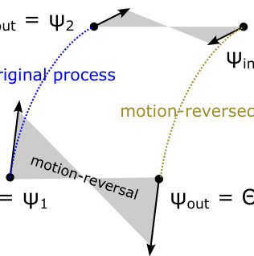
<figcaption class="paper-figure-caption"><b>Fig 1.</b> FIG. 1. Schematic relation between original and motion- reversed processes for a system with momentum.</figcaption>
</figure>
<figure class="paper-figure-card">
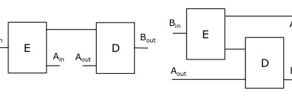
<figcaption class="paper-figure-caption"><b>Fig 2.</b> FIG. 2. (Left) the circuit representation of a general super- channel f : A ⊸B and (right) its map form Mf.</figcaption>
</figure>
<figure class="paper-figure-card">
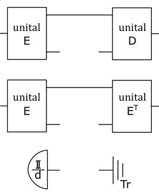
<figcaption class="paper-figure-caption"><b>Fig 3.</b> FIG. 3. (a) Circuit representation of an example of a uni- tal superchannel, featuring a unital encoder channel E and a unital decoder channel D. (b) Circuit representation of an example of a T-symmetric superchannel, featuring a unital encoder channel E and its transposed unital decoder channel E⊤. The motion reversal is assumed to be given by complex conjugation. (c) A T-symmetric superchannel that discards its input channel.</figcaption>
</figure>
<figure class="paper-figure-card">
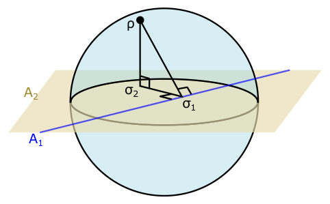
<figcaption class="paper-figure-caption"><b>Fig 4.</b> FIG. 4. Schematic relation among the TGC submanifolds and minimizers in Lemma 4. The ball represents the state space D(H). The geometry is deliberately simplified to depict the generalized Pythagorean theorem in familiar Euclidean terms.</figcaption>
</figure>
<figure class="paper-figure-card">
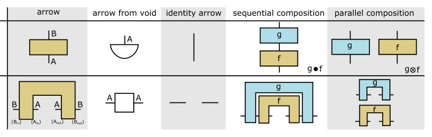
<figcaption class="paper-figure-caption"><b>Fig 5.</b> FIG. 5. Correspondence between elements of the process theories (Cdet, CUnital, and CTRS) and elements of quantum circuits. The circuit element shaped like “⊓” represents a one-slot quantum comb.</figcaption>
</figure>
</div>

<p><strong>Summary.</strong> This paper introduces a dynamical resource theory to quantify time-reversal symmetry breaking in general quantum channels. It resolves a long-standing ambiguity by decomposing total T-violation into a thermodynamic component (nonunitality) and a kinematic component. This framework provides a powerful, operational measure for studying symmetry breaking in open quantum systems.</p>
<p><strong>Why it may be interesting.</strong> This work provides a rigorous, operational tool to quantify fundamental symmetries in open quantum systems, which is crucial for understanding decoherence and non-equilibrium dynamics in AMO physics.</p>
<details>
<summary>Detailed structure</summary>
<p><strong>Main problem.</strong> The paper aims to develop an operationally meaningful framework to quantify intrinsic Time-reversal symmetry breaking (T-violation) in general quantum channels, resolving the conceptual confusion between T-violation and non-invertibility.</p>
<p><strong>Main result.</strong> T-violation is decomposed into two distinct, additive components: kinematic T-violation (from antiunitary motion-reversal) and nonunitality driven by thermodynamics. The resource theory of kinematic T-violation is shown to be robust and applicable even to classical channels.</p>
<p><strong>Method.</strong> The authors employ dynamical resource theory, defining T-symmetry operationally for quantum channels and decomposing the total T-violation into its constituent parts using specific antiunitary operators.</p>
<p><strong>Model / system.</strong> The analysis is performed on general quantum channels ($\mathcal{E}$), extending beyond simple Hamiltonians to account for non-unitary, dissipative processes. The framework uses concepts like motion-reversal operators ($\Theta$) and the Oreshkov–Cerf formalism.</p>
<p><strong>Key observables.</strong> T-violation, kinematic T-violation, nonunitality, transition probabilities, and resource measures like trace distance and relative entropy.</p>
<p><strong>Important parameters / regimes.</strong> The decomposition relies on the relationship $  ext{T-violation} =  ext{nonunitality} +     ext{kinematic T-violation}$.</p>
<p><strong>Assumptions / limitations.</strong> The definition of motion reversal is relative to a chosen reference time displacement ($U_{\Delta t}$), and the analysis focuses on the simplest setting without decomposing into superselection sectors.</p>
<p><strong>Figures summary.</strong> Figure 1 schematically relates original and motion-reversed processes for a system with momentum. Figure 5 shows the correspondence between process theory elements and quantum circuit elements.</p>
<p><strong>Paper structure.</strong> The paper first establishes the operational definition of T-symmetry for processes, then develops the resource theory framework by decomposing T-violation, and finally analyzes the resulting resource theory of kinematic T-violation.</p>
</details>
<details>
<summary>Abstract</summary>
<p>Time-reversal symmetry and its violation (T-violation) are fundamental across diverse physics domains, from particle physics to fluctuation theorems and reciprocity. While time-reversal symmetry for isolated systems is simply determined by the Hamiltonian, quantifying the magnitude of T-violation, especially in noisy quantum processes, has been a subject of ongoing debate. Here, we propose an operationally meaningful framework to quantify the intrinsic T-violation of quantum channels. We integrate operationally defined time-reversal transformations into dynamical resource theory to formulate T-violation as a resource. T-violation decomposes into two distinct components: kinematic T-violation originating from antiunitary motion-reversal, and nonunitality driven purely by thermodynamics. This decomposition resolves the longstanding confusion between broken time-reversal symmetry and non-invertibility. Finally, we analyze the resulting resource theory of kinematic T-violation, showing that it is neither quality-like nor quantity-like, and proving the existence of a universal golden unit even within classical channels.</p>
</details>
<p><sub><a href="#top">↑ back to top</a></sub></p>

<p><a id="paper-2609.36029"></a></p>
<h3 id="out-of-time-ordered-correlators-beyond-lindblad"><a href="http://arxiv.org/abs/2609.36029v1">Out-of-Time-Ordered Correlators Beyond Lindblad</a></h3>
<p><strong>Authors:</strong> Elisa Vallini, Felix Fritzsch, Pieter W. Claeys<br>
<strong>Type:</strong> theory · <strong>Category:</strong> statistical mechanics · <strong>PDF:</strong> <a href="https://arxiv.org/pdf/2609.36029v1">https://arxiv.org/pdf/2609.36029v1</a><br>
<strong>Analysis basis:</strong> full PDF text, analyzed in chunks
<strong>Topic relevance:</strong> <code>correlated / nonlocal dissipation</code> <strong>3/5</strong> · <code>driven-dissipative phase transition</code> <strong>3/5</strong> · <code>methods for driven-dissipative</code> <strong>3/5</strong> · <code>non-equilibrium universality</code> <strong>3/5</strong> · <code>Keldysh / 2PI / non-Gaussian methods</code> <strong>2/5</strong></p>
<div class="figure-strip-hint">↔ Scroll figures horizontally</div>
<div class="paper-figures-scroll">
<figure class="paper-figure-card">
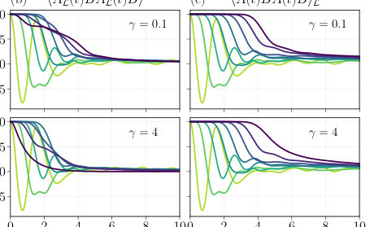
<figcaption class="paper-figure-caption"><b>Fig 1.</b> FIG. 1. Operator spreading in the boundary-dissipated Ising chain (11). The OTOCs are numerically studied for A = σz i , with i = 1, . . . , L, and B = σz 1, for a system of size L = 8. Panel (a) shows the OTOC under unitary dynamics, while panels (b) and (c) show the reduced and full OTOCs, respec- tively, for two different values of γ ̸= 0. The competition be- tween unitary scrambling and dissipation manifests differently in the two quantities, with the full OTOC ⟨A(t)BA(t)B⟩L providing a more faithful description of the scrambling dy- namics of the corresponding closed system.</figcaption>
</figure>
<figure class="paper-figure-card">
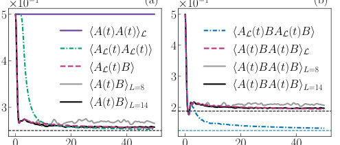
<figcaption class="paper-figure-caption"><b>Fig 2.</b> FIG. 2. Late-time behavior of correlations between A = B = 1</figcaption>
</figure>
<figure class="paper-figure-card">
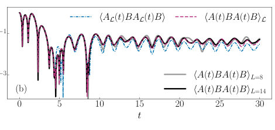
<figcaption class="paper-figure-caption"><b>Fig 3.</b> FIG. 3. Correlation functions and OTOCs in the boundary- dissipated Ising chain (11), for boundary operators A = B = σz 1. (a) Correlation function for the open system (L = 8, γ = 1, dashed magenta), compared with the ones of the closed system for L = 14 (solid black) and L = 8 (solid gray). (b) Full OTOC for the open system (L = 8, γ = 1, dashed magenta), compared with the corresponding closed- system OTOCs for L = 14 (solid black) and L = 8 (solid gray). The reduced OTOC of the open system is also shown (dash-dotted blue). In both panels, the open-system results closely reproduce those of the larger closed system, whereas the reduced OTOC provides a significantly poorer approxi- mation.</figcaption>
</figure>
<figure class="paper-figure-card">
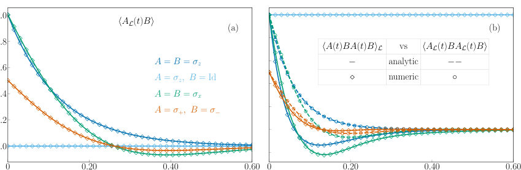
<figcaption class="paper-figure-caption"><b>Fig 4.</b> FIG. 1. Single rotating qubit subject to dephasing and depolarization, cf. Eq. (S49). The parameters are fixed to p = 3, γz = 1, and γ = 2. We consider correlations between A = B = σz (blue), A = σz and B = 1 (light blue), A = B = σx (green), and A = σ+ and B = σ−(orange). (a) Correlation functions ⟨AL(t)B⟩. The analytical expressions (solid lines) are compared with numerical simulations of the Lindblad evolution (diamonds), using a time step ∆t = 10−3. (b) Full OTOCs ⟨A(t)BA(t)B⟩L (solid lines) compared with the corresponding reduced OTOCs ⟨AL(t)BAL(t)B⟩(dashed lines). The analytical results follow from Eqs. (S51) and (S52), with the latter giving the correction that distinguishes the full...</figcaption>
</figure>
</div>

<p><strong>Summary.</strong> This paper develops an extended formalism for calculating Out-of-Time-Ordered Correlators (OTOCs) in open quantum systems, showing that the standard Lindblad approach is insufficient. By including a crucial 'replica-correlation term,' the authors restore physical properties lost in the reduced description. This allows for more accurate study of quantum chaos and operator spreading in realistic, dissipative environments.</p>
<p><strong>Why it may be interesting.</strong> This work provides a rigorous theoretical tool to accurately calculate quantum chaos measures (OTOCs) in realistic open quantum systems, bridging the gap between unitary and dissipative dynamics.</p>
<details>
<summary>Detailed structure</summary>
<p><strong>Main problem.</strong> The paper investigates Out-of-Time-Ordered Correlators (OTOCs) in open quantum systems, specifically addressing the limitations of using the standard Lindblad formalism for these higher-order correlators.</p>
<p><strong>Main result.</strong> The full OTOC dynamics requires an additional 'replica-correlation term' beyond the standard Lindblad approach, which restores fundamental properties like the conservation of the operator Hilbert–Schmidt norm.</p>
<p><strong>Method.</strong> The authors derive the OTOC evolution by systematically tracking correlations between environment replicas, leading to an extended formalism that corrects the standard reduced dynamics.</p>
<p><strong>Model / system.</strong> The study uses a microscopic model of a system coupled to a random bath, exemplified by a dissipative Ising chain with boundary dissipation. The dynamics are analyzed by comparing the full unitary evolution to the reduced Lindblad evolution.</p>
<p><strong>Key observables.</strong> Out-of-Time-Ordered Correlators (OTOCs), operator spreading, and the conservation of the operator Hilbert–Schmidt norm.</p>
<p><strong>Important parameters / regimes.</strong> Dissipation strength ($\gamma$), time ($t$), and the replica number ($k$).</p>
<p><strong>Assumptions / limitations.</strong> The standard Lindblad formalism is insufficient for OTOCs because it neglects correlations between replicas, necessitating the inclusion of the replica-correlation term.</p>
<p><strong>Figures summary.</strong> Figures compare OTOCs for different dissipation strengths ($\gamma$), showing that the full OTOC retains unitary-like behavior, while the reduced OTOC exhibits premature decay near the dissipative boundary.</p>
<p><strong>Paper structure.</strong> The paper progresses from establishing the failure of the standard Lindblad approach for OTOCs to deriving the necessary replica-correlation term, and finally applying this extended formalism to study operator spreading in dissipative spin chains.</p>
</details>
<details>
<summary>Abstract</summary>
<p>Out-of-time-ordered correlators (OTOCs) provide a powerful probe of quantum chaos and scrambling. While the Lindblad formalism is often used to describe OTOCs in open systems, microscopic mechanisms that give rise to the Lindblad equation at the level of time-ordered correlation functions do not necessarily justify this approach at the level of OTOCs. Starting from a microscopic model of a subsystem coupled to a random bath, we show that the resulting OTOC dynamics contains an additional contribution compared to the standard Lindblad approach. This contribution, induced by correlations between different replicas, allows key properties of the underlying unitary dynamics such as long-time freeness to be retained and information scrambling to be captured more faithfully. As an application, we show that this extended formalism can be used to numerically study OTOCs in large closed systems by replacing part of the system with a dissipative boundary, offering a way to study operator spreading and higher-order correlations beyond directly accessible system sizes.</p>
</details>
<p><sub><a href="#top">↑ back to top</a></sub></p>

<p><a id="paper-2609.37102"></a></p>
<h3 id="thermodynamics-of-the-space-of-trajectories-governed-by-a-combination-of-two-additive-boundary-functionals"><a href="http://arxiv.org/abs/2609.37102v1">Thermodynamics of the space of trajectories governed by a combination of two additive boundary functionals</a></h3>
<p><strong>Authors:</strong> V. V. Ryazanov<br>
<strong>Type:</strong> theory · <strong>Category:</strong> statistical mechanics · <strong>PDF:</strong> <a href="https://arxiv.org/pdf/2609.37102v1">https://arxiv.org/pdf/2609.37102v1</a><br>
<strong>Analysis basis:</strong> full PDF text, analyzed in chunks
<strong>Topic relevance:</strong> <code>non-equilibrium universality</code> <strong>3/5</strong> · <code>Keldysh / 2PI / non-Gaussian methods</code> <strong>2/5</strong> · <code>methods for driven-dissipative</code> <strong>2/5</strong> · <code>quantum measurements</code> <strong>2/5</strong> · <code>Full counting statistics</code> <strong>1/5</strong> · <code>analog quantum simulation</code> <strong>1/5</strong> · <code>correlated / nonlocal dissipation</code> <strong>1/5</strong> · <code>driven-dissipative phase transition</code> <strong>1/5</strong> · <code>scars &amp; prethermalization</code> <strong>1/5</strong></p>
<div class="figure-strip-hint">↔ Scroll figures horizontally</div>
<div class="paper-figures-scroll">
<figure class="paper-figure-card">
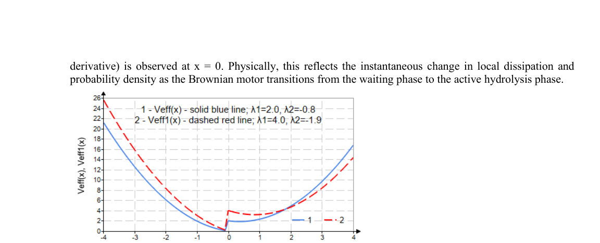
<figcaption class="paper-figure-caption"><b>Fig 1.</b> Fig. 1. Mathcad visualization of the generalized &quot;quantum-mechanical&quot; potential profile for the system of equation (4). The potential function comprises three components: the harmonic trap of the Ornstein-Uhlenbeck process, a step-like &quot;penalty&quot; (Heaviside function), and a linear slope due to drift. The formula for the resulting effective potential is: 2 2</figcaption>
</figure>
<figure class="paper-figure-card">
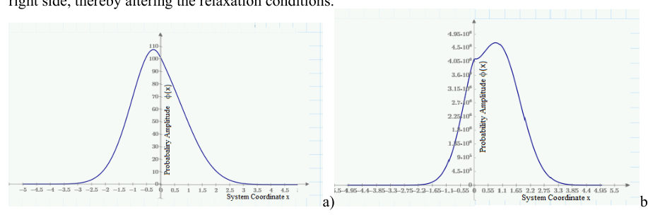
<figcaption class="paper-figure-caption"><b>Fig 2.</b> Figure 2. Evolution of the ground-state wave function 𝜙(𝑥)under different external driving forces: (a) weak drift regime (𝜆2=−0.8, 𝐸0=1.255); (b) strong drift regime (𝜆2=−2.5, 𝐸0=0.399). The ground-state wave function ( ) x  of the effective Feynman–Kac Hamiltonian under a strong asymmetric drift regime (𝜆2=-0.8, - 2.5, 𝜆1=2.0), (=1.5), (D=0.5). The numerical solution is obtained via a twin-shooting Runge–Kutta algorithm and matched at the interface using the secant method, yielding the precise ground-state energy (E0 = 1.255, 0.399). A pronounced coordinate shift of the probability density maximum into the positive half-plane ( 0.8 x  ) is observed, driven by the dominant external...</figcaption>
</figure>
<figure class="paper-figure-card">
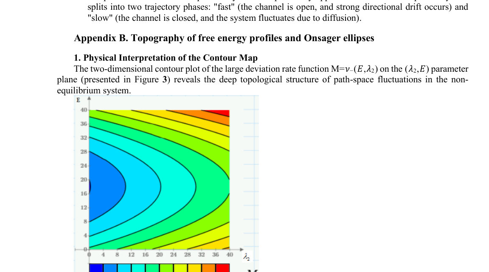
<figcaption class="paper-figure-caption"><b>Fig 3.</b> Figure 3. Topographic contour map of the path-space free energy profile 𝜈−(𝐸,𝜆2). The color gradient corresponds to the magnitude of the rate function matrix 𝑀=𝜈−(𝐸,𝜆2). The transition from concentric quadratic ellipses in the linear regime to asymmetric non-parabolic contours at remote boundaries highlights the breakdown of Onsager’s near-equilibrium symmetry.</figcaption>
</figure>
</div>

<p><strong>Summary.</strong> This work advances stochastic path-space thermodynamics by expanding the set of measurable thermodynamic variables to include complex boundary functionals like residence time and integral current. Using the Ornstein-Uhlenbeck process as a model, the authors derive generalized fluctuation theorems and analyze how external forces break Onsager symmetry in the system's free-energy landscape. This provides a powerful, mathematically rigorous framework for understanding non-equilibrium processes in molecular motors and ion channels.</p>
<p><strong>Why it may be interesting.</strong> While focused on classical stochastic processes, the rigorous application of fluctuation theorems and the extension of thermodynamic variables into path space provide powerful mathematical tools applicable to open quantum systems where non-equilibrium dynamics are crucial.</p>
<details>
<summary>Detailed structure</summary>
<p><strong>Main problem.</strong> The paper extends stochastic path-space thermodynamics by systematically incorporating a broad spectrum of boundary and relative functionals of random processes into the description of thermodynamic variables.</p>
<p><strong>Main result.</strong> It derives a modified path-space fluctuation theorem of the Gallavotti-Cohen type and establishes an exact thermodynamic potential for systems governed by combinations of two additive functionals.</p>
<p><strong>Method.</strong> The analysis employs the Feynman-Kac formalism and parabolic cylinder theory to calculate the joint Laplace transform, leading to the determination of the effective Hamiltonian's eigenvalues.</p>
<p><strong>Model / system.</strong> The primary model is a one-dimensional Ornstein-Uhlenbeck process, used to simulate the waiting phase of a molecular Brownian motor or an ion channel sensitive to external stimuli.</p>
<p><strong>Key observables.</strong> Residence time ($  au_+$), integral current ($ ext{T}<em 12>I$), Maximal Deficit (Maximum Drawdown), and the mutual cross-sensitivity coefficient ($\chi</em>$).</p>
<p><strong>Important parameters / regimes.</strong> The analysis explores regimes far from equilibrium, such as the deep suppression regime ($  au^+    o 0$) and the continuous activation regime ($  au^+    o 1$), and the effect of external drift ($V$).</p>
<p><strong>Assumptions / limitations.</strong> The framework relies on the mathematical tractability afforded by considering the combination of only two additive functionals, and the system dynamics are modeled by the OU process.</p>
<p><strong>Figures summary.</strong> The figures illustrate the topographic contour map of the path-space free energy profile, showing the transition from symmetric quadratic ellipses near equilibrium to asymmetric, non-parabolic contours when far from equilibrium or when external drifts break symmetry.</p>
<p><strong>Paper structure.</strong> The paper systematically builds its argument by first extending the formalism via boundary functionals, then detailing the mathematical framework using the Feynman-Kac approach for the OU process, applying it to a biological ion channel model, and finally discussing the derived results and implications.</p>
</details>
<details>
<summary>Abstract</summary>
<p>This paper extends the formalism of stochastic path-space thermodynamics by systematically expanding the space of thermodynamic variables with a spectrum of boundary and relative functionals of random processes. Generalizing the approaches introduced in preprints arXiv:2607.24078 and arXiv:2609.08477, we investigate the fluctuation statistics of a one-dimensional Ornstein-Uhlenbeck process with an asymmetric linear drift and a step penalty potential at the origin, which models the waiting phase of a molecular Brownian motor. Utilizing the Feynman-Kac formalism and the parabolic cylinder theory, a numerical scheme based on matching logarithmic derivatives via the secant method is constructed. A high-precision eigenvalues of the effective Hamiltonian is obtained, which define the cumulant generating function. We formulate a modified path-space fluctuation theorem of the Gallavotti-Cohen type for the conjugate drift current at a fixed integral occupation time of the system in the dissipative half-plane. The physical and thermodynamic significance of the new variables is elucidated. A combination of "residence time" and "integral current" functionals is applied to describe an ion channel sensitive to mechanical or electrical stimuli.</p>
</details>
<p><sub><a href="#top">↑ back to top</a></sub></p>

<p><a id="paper-2609.37514"></a></p>
<h3 id="multi-parameter-error-mitigation-in-parametric-down-conversion-via-su1-1-composite-segmentation"><a href="http://arxiv.org/abs/2609.37514v1">Multi-Parameter Error Mitigation in Parametric Down-Conversion via SU(1, 1) Composite Segmentation</a></h3>
<p><strong>Authors:</strong> Nastaran Ragerdi Kashani, Rouhollah Karimzadeh<br>
<strong>Type:</strong> theory · <strong>Category:</strong> other · <strong>PDF:</strong> <a href="https://arxiv.org/pdf/2609.37514v1">https://arxiv.org/pdf/2609.37514v1</a><br>
<strong>Analysis basis:</strong> full PDF text, analyzed in chunks
<strong>Topic relevance:</strong> <code>driven-dissipative phase transition</code> <strong>3/5</strong> · <code>interference shaping light</code> <strong>2/5</strong> · <code>methods for driven-dissipative</code> <strong>2/5</strong> · <code>Keldysh / 2PI / non-Gaussian methods</code> <strong>1/5</strong> · <code>analog quantum simulation</code> <strong>1/5</strong> · <code>correlated / nonlocal dissipation</code> <strong>1/5</strong> · <code>non-equilibrium universality</code> <strong>1/5</strong> · <code>quantum measurements</code> <strong>1/5</strong> · <code>quantum optics experiment</code> <strong>1/5</strong></p>
<div class="figure-strip-hint">↔ Scroll figures horizontally</div>
<div class="paper-figures-scroll">
<figure class="paper-figure-card">
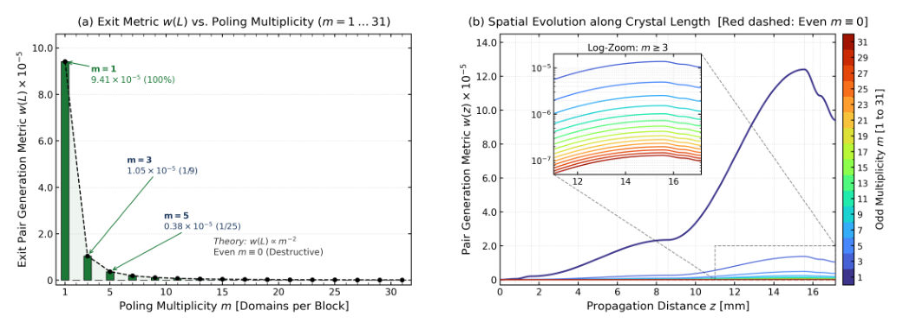
<figcaption class="paper-figure-caption"><b>Fig 1.</b> FIG. 1. (a) Exit pair generation metric w(L) across poling multiplicities m = 1 . . . 31. Odd orders approach the predicted asymptotic m−2 scaling law (dashed curve). Even orders vanish identically for an ideal symmetric square wave. (b) Trajectory of w(z) along the crystal axis for all sixteen odd harmonics. Inset: logarithmic separation of trajectories for m ≥3.</figcaption>
</figure>
<figure class="paper-figure-card">
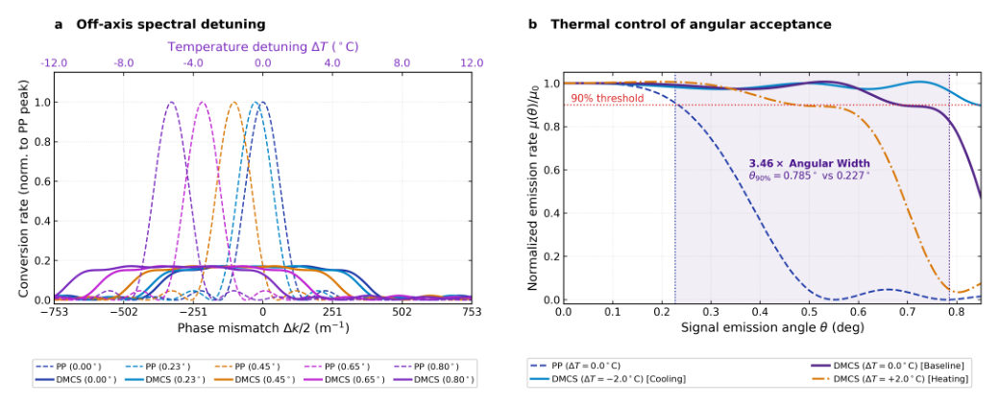
<figcaption class="paper-figure-caption"><b>Fig 2.</b> FIG. 2. (a) Normalized conversion efficiency versus detuning ∆k/2 and temperature for emission angles up to θ = 0.80◦(solid lines: DMCS, dashed lines: PP). (b) Angular acceptance profile at the 90% threshold. At baseline (∆T = 0◦C), the DMCS architecture provides an acceptance half-angle of θ90% = 0.785◦, representing a 3.46× enhancement over the PP baseline (θPP 90% = 0.227◦). Controlled thermal offsets (∆T = −2.0◦C cooling, +2.0◦C heating) dynamically steer and broaden the acceptance window.</figcaption>
</figure>
<figure class="paper-figure-card">
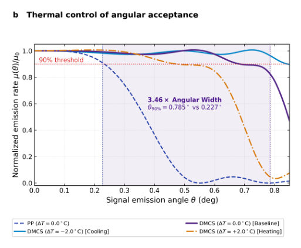
<figcaption class="paper-figure-caption"><b>Fig 3.</b> Figure 3 demonstrates this scaling relation across three representative physical configurations, where crystal seg- ment lengths and poling periods are designed to match the material dispersion at each target band. For short wavelengths (λp = 405 nm →810 nm), choosing r = 0.472 compresses the interaction length to L = 8.10 mm, while third-order poling (m = 3, Λ ≈7.2 µm) avoids sub-micron lithographic constraints. The near-infrared baseline (λp = 532 nm →1064 nm) serves as the un-</figcaption>
</figure>
<figure class="paper-figure-card">
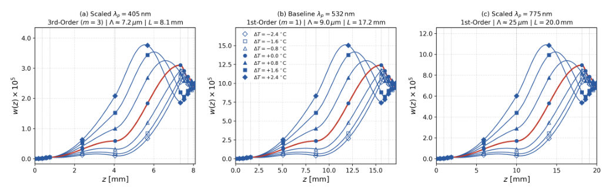
<figcaption class="paper-figure-caption"><b>Fig 4.</b> FIG. 3. Scale Invariance Across Operating Wavelength Regimes. Spatial evolution of the metric w(z) × 105 under temperature detunings ∆T ∈[−2.4◦C, +2.4◦C] (red solid curves: unperturbed ∆T = 0◦C, blue curves with markers: detuned states, vertical dotted lines: segment interfaces) across three regimes: (a) Short-wavelength regime (λp = 405 nm →810 nm, r = 0.472, L = 8.10 mm); (b) Reference regime (λp = 532 nm →1064 nm, r = 1.000, L = 17.16 mm); (c) Telecom regime (λp = 775 nm →1550 nm, r = 1.165, L = 20.00 mm). In each case, physical segment lengths and poling periods are redesigned to satisfy the scaled parameters under material dispersion.</figcaption>
</figure>
<figure class="paper-figure-card">
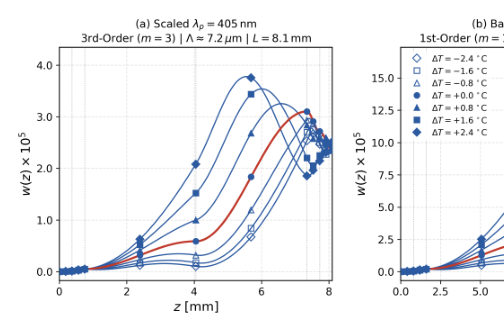
<figcaption class="paper-figure-caption"><b>Fig 5.</b> Figure 4 tracks the state trajectory on the hyperboloid</figcaption>
</figure>
</div>

<p><strong>Summary.</strong> This paper develops a theoretical framework to enhance the robustness of Spontaneous Parametric Down-Conversion (SPDC) by implementing a technique called composite segmentation governed by SU(1, 1) dynamics. The authors demonstrate that this method significantly mitigates performance losses due to temperature drift, angular misalignment, and fabrication defects. The results show that the system maintains high efficiency and phase coherence across realistic environmental variations without needing complex, continuous feedback stabilization.</p>
<p><strong>Why it may be interesting.</strong> This work provides a highly structured, mathematically rigorous framework (SU(1, 1) algebra) for designing robust quantum light sources, which is crucial for scaling quantum technologies beyond idealized laboratory conditions.</p>
<details>
<summary>Detailed structure</summary>
<p><strong>Main problem.</strong> The primary challenge addressed is mitigating performance degradation, specifically reduced pair-generation efficiency and phase instability, in Spontaneous Parametric Down-Conversion (SPDC) caused by environmental fluctuations and fabrication imperfections.</p>
<p><strong>Main result.</strong> The proposed composite segmentation approach maintains high relative conversion efficiency ($\eta \ge 0.954$) and phase coherence across a $5^\circ	ext{C}$ thermal window without continuous feedback, and it tolerates up to two missing poling domains.</p>
<p><strong>Method.</strong> The analysis employs a theoretical framework based on the SU(1, 1) Lie algebra, utilizing spatial Fourier decomposition and deriving asymptotic scaling laws for error cancellation.</p>
<p><strong>Model / system.</strong> The system is SPDC in quadratic chi^(2) media, generating two-mode squeezed vacuum states. The dynamics are modeled using coupled-mode equations whose algebra is isomorphic to SU(1, 1), analyzed via Detuning Modulated Composite Segmentation (DMCS).</p>
<p><strong>Key observables.</strong> Relative pair-generation efficiency ($\eta$), modeled phase-coherence metric ($C_\phi$), and the exit pair conversion metric ($w(L; m)$).</p>
<p><strong>Important parameters / regimes.</strong> Thermal variation ($\Delta T$), angular misalignment ($    heta$), spatial harmonic order ($m$), and the number of missing poling domains ($\Delta M$).</p>
<p><strong>Assumptions / limitations.</strong> The analysis assumes the low-gain regime for the pair generation process and relies on the existence of a coordinate-dilation symmetry for wavelength translation.</p>
<p><strong>Figures summary.</strong> Figure 1 numerically integrates the evolution showing the predicted $1/m^2$ scaling of the pair-generation rate with harmonic order $m$.</p>
<p><strong>Paper structure.</strong> The paper establishes the physical problem (error sources in SPDC), develops the theoretical model using SU(1, 1) algebra and composite segmentation, derives key scaling laws ($m^{-2}$), and then applies these tools to demonstrate robustness against thermal drift, angular misalignment, and fabrication defects.</p>
</details>
<details>
<summary>Abstract</summary>
<p>Spontaneous parametric down-conversion is a primary resource for generating non-classical light, yet phase mismatch fluctuations from temperature drift, angular misalignment, and domain fabrication errors reduce pair-generation efficiency and phase stability. Here, we analyze error mitigation in spontaneous parametric down-conversion using composite segmentation governed by SU(1, 1) spatial dynamics. We show that odd spatial Fourier harmonics preserve error-cancellation flatness with pair-generation rates scaling asymptotically as $m^{-2}$, while a coordinate-dilation symmetry provides a design prescription for translating configurations across distinct operating wavelengths (405, 532, and 775 nm). Furthermore, an open-loop thermo-optic bias counteracts off-axis angular drift to broaden the 90%-efficiency angular acceptance half-width by 3.46x, and up to two missing poling domains are tolerated with no numerically resolved loss in relative conversion efficiency. Across a 5$^\circ$C thermal window, the generated pairs sustain a relative conversion efficiency of $η\ge 0.954$ with the modeled phase-coherence metric remaining above 0.95, providing a structurally robust approach for entangled photon generation without requiring continuous closed-loop feedback stabilization.</p>
</details>
<p><sub><a href="#top">↑ back to top</a></sub></p>

<p><a id="paper-2609.37205"></a></p>
<h3 id="the-spectral-cost-of-detecting-nonequilibrium-at-finite-temporal-resolution"><a href="http://arxiv.org/abs/2609.37205v1">The Spectral Cost of Detecting Nonequilibrium at Finite Temporal Resolution</a></h3>
<p><strong>Authors:</strong> Murad Aznagulov<br>
<strong>Type:</strong> theory · <strong>Category:</strong> statistical mechanics · <strong>PDF:</strong> <a href="https://arxiv.org/pdf/2609.37205v1">https://arxiv.org/pdf/2609.37205v1</a><br>
<strong>Analysis basis:</strong> full PDF text, analyzed in chunks
<strong>Topic relevance:</strong> <code>driven-dissipative phase transition</code> <strong>3/5</strong> · <code>non-equilibrium universality</code> <strong>3/5</strong> · <code>quantum measurements</code> <strong>3/5</strong> · <code>Keldysh / 2PI / non-Gaussian methods</code> <strong>1/5</strong> · <code>correlated / nonlocal dissipation</code> <strong>1/5</strong> · <code>methods for driven-dissipative</code> <strong>1/5</strong></p>
<div class="figure-strip-hint">↔ Scroll figures horizontally</div>
<div class="paper-figures-scroll">
<figure class="paper-figure-card">
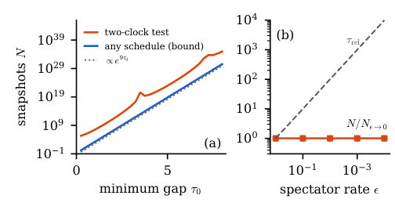
<figcaption class="paper-figure-caption"><b>Fig 1.</b> FIG. 1. Observation cost for the driven ring G of Eq. (11) at α = 0.01. (a) Blue: rigorous analytic information lower bound valid for every causal schedule and stopping rule; for the plotted range maxi DKL[(etG)i·∥(etS)i·] ≤24e−9t. Orange: deterministic 60-digit central-limit power budget of the two- clock current test (rℓ= 1, 4), shown as a protocol diagnostic rather than the theorem’s conservative finite-budget constant. Both have exponent 9 = 2γirr. (b) For the product chain Qϵ at τ0 = 1, the lower bound uses only the driven factor and the test ignores the reversible spectator, exactly as in the proof; both observation costs are therefore independent of ϵ while the relaxation time 1/(2ϵ)...</figcaption>
</figure>
<figure class="paper-figure-card">
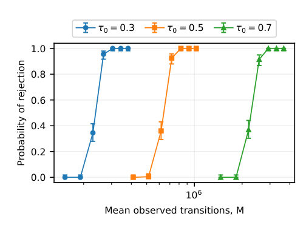
<figcaption class="paper-figure-caption"><b>Fig 2.</b> FIG. 2. Power of the one-record current test for the driven ring at α = 0.01. Bars are exact 95% binomial intervals over independent whole records [20]; snapshots within a record are dependent. The prespecified study shows the shift to larger budgets as τ0 grows; it is not a fit of the asymptotic exponent.</figcaption>
</figure>
</div>

<p><strong>Summary.</strong> This theoretical paper establishes a fundamental, exponential lower bound on the number of measurements needed to detect non-equilibrium dynamics in a stochastic system. The cost scales exponentially with the minimum measurement time gap ($   au_0$) and is governed by the slowest damping rate ($\gamma_{ ext{irr}}$) of the system's irreversible modes. This result sets a rigorous benchmark for experimental detection limits in non-equilibrium statistical mechanics.</p>
<p><strong>Why it may be interesting.</strong> This work provides a fundamental, quantitative limit on the experimental feasibility of detecting true non-equilibrium dynamics in physical systems, linking measurement limitations directly to the spectral properties ($\gamma_{	ext{irr}}$) of the underlying master equation.</p>
<details>
<summary>Detailed structure</summary>
<p><strong>Main problem.</strong> Determining the minimum number of measurements required to statistically distinguish a true non-equilibrium stochastic process from any hidden equilibrium process, given a finite minimum measurement gap.</p>
<p><strong>Main result.</strong> The required number of snapshots scales exponentially with the minimum measurement gap ($  au_0$), specifically $N^* \propto e^{2\gamma_{	ext{irr}}	au_0}$, where $\gamma_{	ext{irr}}$ is the slowest damping rate of the rotating modes.</p>
<p><strong>Method.</strong> The analysis uses information-theoretic bounds, relating detectability to relative entropy and causal stopping times, establishing both lower and upper bounds on the required sample size.</p>
<p><strong>Model / system.</strong> The study analyzes stochastic systems governed by finite Markov generators ($Q$), comparing the true irreversible dynamics against the null class of reversible Markov chains.</p>
<p><strong>Key observables.</strong> Minimum expected number of snapshots ($N^*$), entropy production rate, and the measurable current ($V$).</p>
<p><strong>Important parameters / regimes.</strong> Minimum measurement gap ($  au_0$), the slowest damping rate ($\gamma_{ ext{irr}}$), and the statistical significance level ($\alpha$).</p>
<p><strong>Assumptions / limitations.</strong> The process starts in stationarity, and the analysis holds for every causal timing strategy and prespecified measurement schedule.</p>
<p><strong>Figures summary.</strong> Figures illustrate the exponential scaling of the observation cost for a driven ring, showing the analytic lower bound matching the achievable upper bound, and demonstrating the robustness of the test against hidden equilibrium controls.</p>
<p><strong>Paper structure.</strong> The paper establishes the core problem by comparing non-equilibrium vs. equilibrium dynamics. It derives the exponential lower bound using information theory and then shows that this bound is achievable by a fixed, non-adaptive measurement protocol.</p>
</details>
<details>
<summary>Abstract</summary>
<p>A detector that cannot take two snapshots closer than a time $τ_0$ still identifies a fully observed finite Markov generator exactly, provided its gaps are randomized by two clocks. Identification is not detection. For a normal nonequilibrium network, the number of snapshots needed to reject every hidden equilibrium explanation grows as $e^{2γ_{\mathrm{irr}}τ_0}$, where $γ_{\mathrm{irr}}$ is the slowest damping of rotating modes. No adaptive schedule beats this rate, and a test on one dependent trajectory attains it.</p>
</details>
<p><sub><a href="#top">↑ back to top</a></sub></p>

<p><a id="paper-2609.36080"></a></p>
<h3 id="witness-based-quantification-of-non-markovianity-without-complete-choi-state-reconstruction"><a href="http://arxiv.org/abs/2609.36080v1">Witness-based quantification of non-Markovianity without complete Choi state reconstruction</a></h3>
<p><strong>Authors:</strong> Pritam Roy, Saheli Mukherjee, Bivas Mallick<br>
<strong>Type:</strong> theory · <strong>Category:</strong> quantum information and computing · <strong>PDF:</strong> <a href="https://arxiv.org/pdf/2609.36080v1">https://arxiv.org/pdf/2609.36080v1</a><br>
<strong>Analysis basis:</strong> full PDF text, analyzed in chunks
<strong>Topic relevance:</strong> <code>correlated / nonlocal dissipation</code> <strong>3/5</strong> · <code>quantum measurements</code> <strong>3/5</strong> · <code>driven-dissipative phase transition</code> <strong>2/5</strong> · <code>methods for driven-dissipative</code> <strong>2/5</strong> · <code>Keldysh / 2PI / non-Gaussian methods</code> <strong>1/5</strong> · <code>non-equilibrium universality</code> <strong>1/5</strong></p>
<div class="figure-strip-hint">↔ Scroll figures horizontally</div>
<div class="paper-figures-scroll">
<figure class="paper-figure-card">
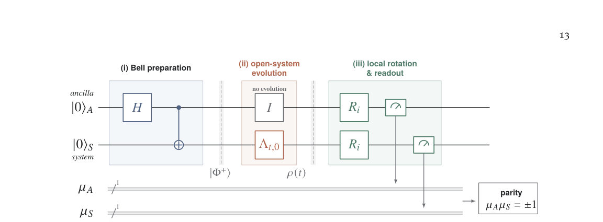
<figcaption class="paper-figure-caption"><b>Fig 1.</b> Figure 1: Single-run experimental circuit for measuring a two-qubit correlation. (i) Bell preparation: the ancilla A and system S are initialized in |0⟩A|0⟩S, and a Hadamard gate followed by a CNOT prepares |Φ+⟩AS = (|00⟩+ |11⟩)/ √</figcaption>
</figure>
<figure class="paper-figure-card">
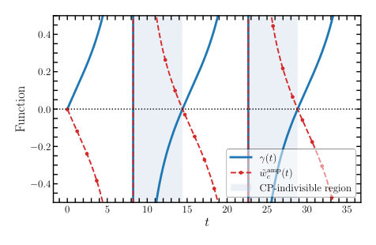
<figcaption class="paper-figure-caption"><b>Fig 2.</b> Figure 2: Operational reconstruction of the non-Markovianity witness for the amplitude-damping channel. The reconstructed</figcaption>
</figure>
<figure class="paper-figure-card">
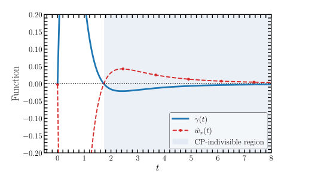
<figcaption class="paper-figure-caption"><b>Fig 3.</b> Figure 3: Operational reconstruction of the non-Markovianity witness for the pure-dephasing channel. The reconstructed witness ewx(t) and the exact decay rate γ(t) are plotted as functions of time for η = 1, Ωc = 1, and s = 3, corresponding to a super-Ohmic reservoir [56]. The shaded regions indicate the CP-indivisible regime, where γ(t) &lt; 0.</figcaption>
</figure>
</div>

<p><strong>Summary.</strong> This paper presents a novel witness-based method to quantify non-Markovianity in open quantum systems without requiring the complete reconstruction of the system's dynamical map. By focusing on positive-semidefinite witnesses, the authors establish a rigorous lower bound on established measures like the RHP measure. This approach offers an efficient and experimentally feasible diagnostic tool for quantum memory effects.</p>
<p><strong>Why it may be interesting.</strong> This work provides a crucial operational tool for characterizing quantum memory effects in open systems, making the theoretical concept of non-Markovianity experimentally accessible by reducing measurement requirements significantly.</p>
<details>
<summary>Detailed structure</summary>
<p><strong>Main problem.</strong> Quantifying non-Markovianity, which is essential for exploiting environmental memory as a resource in quantum technologies.</p>
<p><strong>Main result.</strong> The authors developed a witness-based framework that provides a certifiable lower bound on non-Markovianity measures (like the RHP measure) using only experimentally accessible correlation measurements.</p>
<p><strong>Method.</strong> The framework uses positive-semidefinite witnesses (which act as POVM elements) to establish a quantitative hierarchy connecting witness expectations, the RHP measure, and the geometric distance measure, bypassing the need for full Choi state reconstruction.</p>
<p><strong>Model / system.</strong> The analysis focuses on open quantum systems undergoing evolution described by CPTP dynamical maps, applied specifically to amplitude-damping and general Pauli dynamics.</p>
<p><strong>Key observables.</strong> Witness expectation values, RHP measure, geometric distance measure, and specific correlation functions like Bell-parity projectors.</p>
<p><strong>Important parameters / regimes.</strong> The time evolution parameter $t$, the environmental correlation time, and the structure of the dynamical map $\Lambda(t, t_0)$.</p>
<p><strong>Assumptions / limitations.</strong> The framework is derived for dynamics generated by Lindblad-type master equations, and the focus is on positive-semidefinite witnesses for experimental feasibility.</p>
<p><strong>Paper structure.</strong> The paper establishes the theoretical necessity of quantifying non-Markovianity, critiques existing methods for requiring full map knowledge, introduces the witness-based framework, proves the lower bound relationships, and demonstrates the method's application to specific physical models.</p>
</details>
<details>
<summary>Abstract</summary>
<p>Quantifying non-Markovianity is a fundamental problem in the theory of open quantum systems, as it is essential for exploiting environmental memory as a resource in quantum technologies. Existing resource-theoretic and operational quantifiers, however, generally require complete knowledge of the intermediate dynamical map and are therefore experimentally demanding. Here, we develop a witness-based framework for the quantification of non-Markovianity that bypasses complete reconstruction of the Choi state associated with the intermediate dynamical map. We first show that every non-Markovianity witness provides a certifiable lower bound on the geometric resource measure of non-Markovianity and identify the necessary and sufficient conditions under which this bound is tight. Motivated by the fact that non-positive-semidefinite witnesses are generally difficult to measure in real experimental scenario, we then focus on positive-semidefinite witnesses, which admit a natural implementation as positive operator valued measure (POVM) elements. We prove that every positive witness yields a certified lower bound on the Rivas--Huelga--Plenio (RHP) measure, thereby establishing a complete hierarchy connecting witness-based quantification, the RHP measure, and the geometric distance measure. Applying our framework to amplitude-damping and general Pauli dynamics, we find that the optimal positive witnesses reduce to simple Bell-parity projectors. Furthermore, we show that the resulting witness values can be obtained directly from a small number of experimentally accessible correlation measurements, thereby eliminating the need for complete Choi-state reconstruction and providing an efficient and experimentally feasible approach for the quantification of non-Markovianity in open quantum systems.</p>
</details>
<p><sub><a href="#top">↑ back to top</a></sub></p>

<p><a id="paper-2609.36197"></a></p>
<h3 id="a-partially-linearized-mapping-approach-to-surface-hopping-mash-pldm-for-nonadiabatic-dynamics-and-nonlinear-spectroscopy"><a href="http://arxiv.org/abs/2609.36197v1">A partially linearized mapping approach to surface hopping (MASH-PLDM) for nonadiabatic dynamics and nonlinear spectroscopy</a></h3>
<p><strong>Authors:</strong> Jan Obermeier, Kasra Asnaashari, Jeremy O. Richardson<br>
<strong>Type:</strong> theory · <strong>Category:</strong> other · <strong>PDF:</strong> <a href="https://arxiv.org/pdf/2609.36197v1">https://arxiv.org/pdf/2609.36197v1</a><br>
<strong>Analysis basis:</strong> full PDF text, analyzed in chunks
<strong>Topic relevance:</strong> <code>Keldysh / 2PI / non-Gaussian methods</code> <strong>3/5</strong> · <code>methods for driven-dissipative</code> <strong>3/5</strong> · <code>quantum measurements</code> <strong>3/5</strong> · <code>correlated / nonlocal dissipation</code> <strong>1/5</strong> · <code>driven-dissipative phase transition</code> <strong>1/5</strong></p>
<div class="figure-strip-hint">↔ Scroll figures horizontally</div>
<div class="paper-figures-scroll">
<figure class="paper-figure-card">
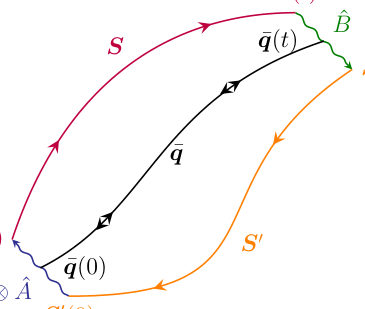
<figcaption class="paper-figure-caption"><b>Fig 1.</b> FIG. 1. The PLDM approximation to the correlation function between ˆA at time 0 and ˆB at time t linearizes the nuclear variables of the forward and backward paths into the average path, ¯q. However, the spin vectors S and S′, which represent the electronic state, are not linearized and follow different forward and backward paths.</figcaption>
</figure>
<figure class="paper-figure-card">
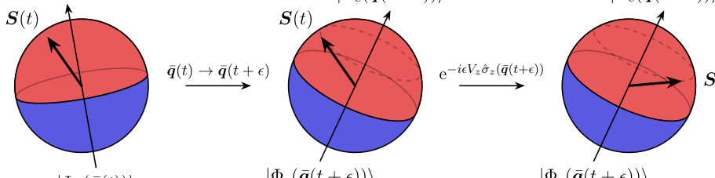
<figcaption class="paper-figure-caption"><b>Fig 2.</b> FIG. 2. Time evolution of the spin vector S induced by Eq. (8). It can be decomposed into two contributions: a rotation around the y-axis (out-of-plane) from the changing character of the adiabatic states; and a precession around the new z-axis on the dashed circle of latitude resulting from the energy difference between the adiabatic states, Vz.</figcaption>
</figure>
<figure class="paper-figure-card">
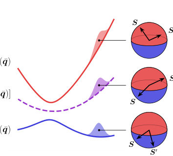
<figcaption class="paper-figure-caption"><b>Fig 3.</b> FIG. 3. In MASH-PLDM, the nuclear force is determined based on the hemispheres in which the spins S and S′ are located. The force is that of the excited state if both spins are in the upper hemisphere, of the lower state if both are in the lower hemisphere, or averaged if they are in different hemispheres.</figcaption>
</figure>
<figure class="paper-figure-card">
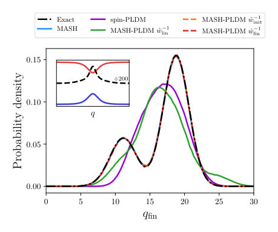
<figcaption class="paper-figure-caption"><b>Fig 4.</b> FIG. 4. Final position distribution after evolving for 150 fs in Tully’s model I. Both MASH and the MASH-PLDM variants agree well with the exact quantum benchmark except when using the linear inverse kernel, ˆw−1 lin . The inset depicts the adiabatic potentials and nonadiabatic coupling vector scaled down by a factor of 200.</figcaption>
</figure>
<figure class="paper-figure-card">
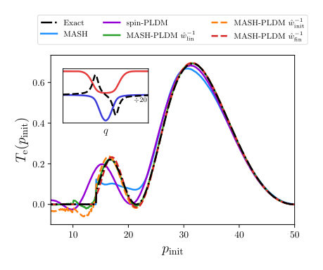
<figcaption class="paper-figure-caption"><b>Fig 5.</b> FIG. 5. The scattering probability of transmission to the upper adiabat as a function of the initial momentum, pinit, for Tully’s model II. The inset depicts the adiabatic potentials and nonadiabatic coupling vector.</figcaption>
</figure>
</div>

<p><strong>Summary.</strong> The paper introduces MASH-PLDM, an advanced surface hopping technique that extends the standard MASH formalism by using a partially linearized density matrix. This allows the method to accurately treat electronic coherences, leading to improved results for nonadiabatic dynamics. Crucially, it provides a pathway to simulate complex multi-time correlation functions required for nonlinear spectroscopy.</p>
<p><strong>Why it may be interesting.</strong> This work directly addresses the simulation of open quantum systems and nonadiabatic processes crucial in molecular physics and quantum optics, providing an advanced, theoretically grounded trajectory-based method.</p>
<details>
<summary>Detailed structure</summary>
<p><strong>Main problem.</strong> Developing a robust method to simulate nonadiabatic dynamics and calculate multi-time correlation functions in molecular systems.</p>
<p><strong>Main result.</strong> The proposed MASH-PLDM method improves upon original MASH dynamics, particularly when electronic coherences are significant, and naturally extends to nonlinear spectroscopy measurements.</p>
<p><strong>Method.</strong> It employs a partially linearized mapping approach (PLDM) applied to the surface hopping formalism, utilizing two distinct spin vectors to track both population on single surfaces and coherence on an average surface.</p>
<p><strong>Model / system.</strong> The study focuses on nonadiabatic molecular dynamics, modeled using a two-level electronic system coupled to nuclear degrees of freedom, often analyzed via path integrals and spin vectors on the Bloch sphere.</p>
<p><strong>Key observables.</strong> Time-dependent excited-state population, multi-time correlation functions (e.g., for time-resolved pump-probe spectroscopy).</p>
<p><strong>Important parameters / regimes.</strong> The dynamics are governed by the electronic Hamiltonian and the coupling to nuclear motion, analyzed in the quasiclassical limit.</p>
<p><strong>Assumptions / limitations.</strong> The core approximation is the Partially Linearized Density Matrix (PLDM), which linearizes nuclear variables into an average path while treating electronic spin vectors separately.</p>
<p><strong>Figures summary.</strong> Figures illustrate the PLDM approximation to correlation functions and the time evolution of the spin vector, showing precession and rotation dynamics.</p>
<p><strong>Paper structure.</strong> The paper develops the MASH-PLDM formalism by applying the PLDM approximation to the path integral representation of the correlation function, deriving new equations of motion for the nuclei, and validating the method against standard MASH approaches.</p>
</details>
<details>
<summary>Abstract</summary>
<p>We derive a partially linearized version of the mapping approach to surface hopping (MASH) that provides a new method for simulating nonadiabatic dynamics in molecular systems. As in the original MASH formalism, trajectories travel on adiabatic surfaces with hops determined by the dynamics of a spin vector on the Bloch sphere. However, because the new approach is based on the partially linearized density matrix (PLDM), it has two spin vectors, which may be in the same or different hemispheres of the Bloch sphere. The former scenario describes an electronic population moving on a single adiabatic surface, whereas the latter describes a coherence moving on the average surface. We show that this new method, called MASH-PLDM, leads to improved results over the original MASH dynamics for a variety of scattering problems and spin-boson models, especially in cases where coherences play an important role. A further benefit of the new methodology is that it can treat multi-time correlation functions such as those required for nonlinear spectroscopy. We demonstrate this capability with a proof-of-principle simulation of time-resolved pump-probe spectroscopy.</p>
</details>
<p><sub><a href="#top">↑ back to top</a></sub></p>

<p><a id="paper-2609.38009"></a></p>
<h3 id="density-matrices-of-pulsed-quantum-light"><a href="http://arxiv.org/abs/2609.38009v1">Density Matrices of Pulsed Quantum Light</a></h3>
<p><strong>Authors:</strong> Joscelyn van der Veen, Daniel F. V. James<br>
<strong>Type:</strong> theory · <strong>Category:</strong> other · <strong>PDF:</strong> <a href="https://arxiv.org/pdf/2609.38009v1">https://arxiv.org/pdf/2609.38009v1</a><br>
<strong>Analysis basis:</strong> full PDF text, analyzed in chunks
<strong>Topic relevance:</strong> <code>Full counting statistics</code> <strong>3/5</strong> · <code>quantum measurements</code> <strong>3/5</strong> · <code>methods for driven-dissipative</code> <strong>2/5</strong> · <code>Keldysh / 2PI / non-Gaussian methods</code> <strong>1/5</strong> · <code>interference shaping light</code> <strong>1/5</strong> · <code>quantum optics experiment</code> <strong>1/5</strong></p>
<div class="figure-strip-hint">↔ Scroll figures horizontally</div>
<div class="paper-figures-scroll">
<figure class="paper-figure-card">
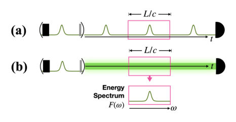
<figcaption class="paper-figure-caption"><b>Fig 1.</b> FIG. 1. We quantize the electric field in some cavity of length L. A coherent density matrix (a) describes the field as a pulse train where each pulse is separated by a time L/c. A stationary density matrix (b) instead has the field existing at all times but with a spectrum that is the Fourier spectrum of a single pulse in any time period L/c.</figcaption>
</figure>
</div>

<p><strong>Summary.</strong> This paper develops a theoretical framework for describing pulsed quantum light using density matrices. It demonstrates that when measured over finite time intervals, different theoretical models of coherence yield the same measurable photocount rates. This resolves ambiguities in the theory by linking the measurable spectrum to the physical properties of the light source.</p>
<p><strong>Why it may be interesting.</strong> This work is highly relevant to quantum optics and open quantum systems as it provides a rigorous framework for interpreting measurements on pulsed quantum light, resolving ambiguities in defining coherence in time-varying fields.</p>
<details>
<summary>Detailed structure</summary>
<p><strong>Main problem.</strong> The theoretical description of pulsed quantum light, particularly concerning the role of coherence when moving beyond single-mode fields, needs refinement.</p>
<p><strong>Main result.</strong> Accounting for finite detection times makes different theoretical density matrices (based on coherence assumptions) yield indistinguishable measurement results for the photocount rate.</p>
<p><strong>Method.</strong> The authors use density matrices and calculate photocount rates by time-averaging first-order correlation functions, comparing results for Poissonian and squeezed vacuum states.</p>
<p><strong>Model / system.</strong> The system is pulsed quantum light, often generated by mode-locked lasers, modeled using density matrices ($\hat{
ho}$) that account for both stationary and nonstationary field characteristics.</p>
<p><strong>Key observables.</strong> Photocount rate ($\omega^{(1)}$) and second-order photocount rate ($\omega^{(2)}$).</p>
<p><strong>Important parameters / regimes.</strong> Finite detection time ($T$), cavity length ($L$), Poisson rate parameter ($\lambda_k$), and squeezing parameter ($\xi$ or $r_k$).</p>
<p><strong>Assumptions / limitations.</strong> The crucial assumption is the finite measurement time, which regularizes the measurement outcomes and leads to the equivalence of different theoretical models.</p>
<p><strong>Figures summary.</strong> Figure 1 illustrates the difference between a coherent density matrix (pulse train) and a stationary density matrix (field with a pulse spectrum).</p>
<p><strong>Paper structure.</strong> The paper progresses by introducing the density matrix formalism for pulsed light, deriving the first-order photocount rate, establishing the equivalence of models under finite measurement time, and finally calculating and comparing the second-order photocount rate for Poissonian versus squeezed vacuum states.</p>
</details>
<details>
<summary>Abstract</summary>
<p>Pulsed light is represented by density matrices whose correlation functions have different properties of stationarity and coherence. We show that these density matrices yield equivalent measurement results after accounting for finite detection times. This in turn reveals a physical meaning to the length of a quantization cavity and explains the origin of the physical spectrum for pulsed light. By generalizing the density matrices for pulsed Gaussian states of light, we can describe pulsed light of varying statistics in the same basis and relate the photocount rate to the pulse spectrum.</p>
</details>
<p><sub><a href="#top">↑ back to top</a></sub></p>

<p><a id="paper-2609.36936"></a></p>
<h3 id="ergodicity-in-a-hole-dopped-anderson-spin-insulator"><a href="http://arxiv.org/abs/2609.36936v1">Ergodicity in a hole-dopped Anderson spin insulator</a></h3>
<p><strong>Authors:</strong> M. S. Bahovadinov, A. A. Markov, G. V. Shlyapnikov<br>
<strong>Type:</strong> theory · <strong>Category:</strong> disordered systems and neural networks · <strong>PDF:</strong> <a href="https://arxiv.org/pdf/2609.36936v1">https://arxiv.org/pdf/2609.36936v1</a><br>
<strong>Analysis basis:</strong> full PDF text, analyzed in chunks
<strong>Topic relevance:</strong> <code>analog quantum simulation</code> <strong>3/5</strong> · <code>scars &amp; prethermalization</code> <strong>3/5</strong> · <code>Keldysh / 2PI / non-Gaussian methods</code> <strong>2/5</strong> · <code>methods for driven-dissipative</code> <strong>2/5</strong> · <code>quantum measurements</code> <strong>1/5</strong></p>
<div class="figure-strip-hint">↔ Scroll figures horizontally</div>
<div class="paper-figures-scroll">
<figure class="paper-figure-card">
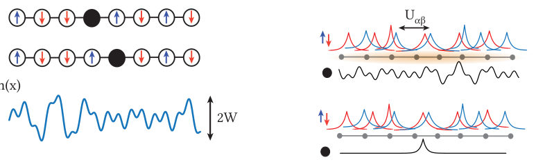
<figcaption class="paper-figure-caption"><b>Fig 1.</b> FIG. 1. Schematic illustration of the system and the main findings. (a) Spin disordered t −JXX model doped with a single hole. (b) At weak disorder W &lt; Wc the spin chain is thermalized by the single hole. At a stronger disorder, W &gt; Wc, the hole localizes and the system as a whole becomes an Anderson insulator.</figcaption>
</figure>
<figure class="paper-figure-card">
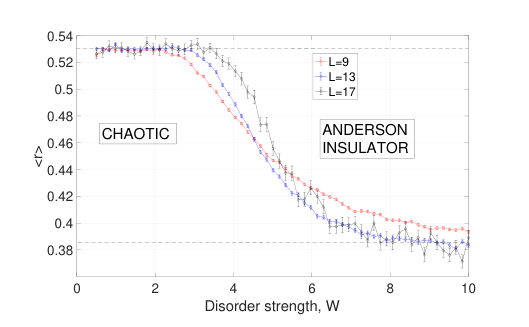
<figcaption class="paper-figure-caption"><b>Fig 2.</b> FIG. 2. Disorder dependence of the disorder-averaged adjacent-gap ratio ⟨r⟩for the single-hole doped disordered XX chain at t/J = 1, shown for system sizes L = {9, 13, 17}. At weak disorder the level statistics is close to the Wigner– Dyson value ⟨r⟩WD ≈0.53, indicating strong level repulsion and delocalized many-body eigenstates. With increasing disorder, ⟨r⟩decreases continuously towards the Poisson value ⟨r⟩P ≈0.386, signaling the suppression of level repulsion and onset of localization. The crossover sharpens with increasing system size, consistent with a disorder-driven localization transition of the coupled hole-spin system.</figcaption>
</figure>
<figure class="paper-figure-card">
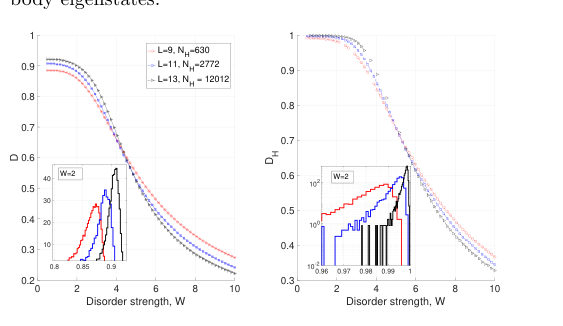
<figcaption class="paper-figure-caption"><b>Fig 3.</b> FIG. 3. Disorder dependence of the Shannon fractal dimensions obtained from the full many-body eigenstates, D (left panel), and from the hole wavefunctions, DH, (right panel) for system sizes L = 9, 11, 13. The many-body fractal dimension D is extracted from the participation entropy of the full eigenstate in the computational basis, while DH is obtained from the reduced hole probability distribution in real space. Insets: histograms of D (left) and DH (right) at weak disorder W = 2. Errorbars are smaller than the symbol sizes.</figcaption>
</figure>
<figure class="paper-figure-card">
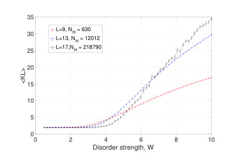
<figcaption class="paper-figure-caption"><b>Fig 4.</b> FIG. 4. Disorder dependence of the disorder-averaged Kullback–Leibler divergence ⟨KL⟩ between neighboring many-body eigenstates for system sizes L = 9, 13, 17.</figcaption>
</figure>
<figure class="paper-figure-card">
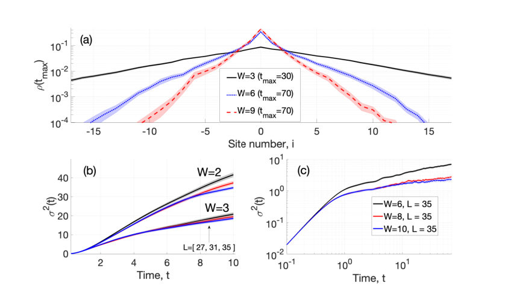
<figcaption class="paper-figure-caption"><b>Fig 5.</b> FIG. 5. Real-time dynamics of the doped hole. (a) Hole probability distribution ρ(j, tmax) at the largest accessible time for disorder strengths W = 3, 6, and 9. At weak disorder the hole distribution is broad, whereas increasing W produces a progressively sharper, exponentially localized profile around the initial hole position. Shaded regions indicate statistical error. (b) Mean-square displacement σ2(t) for weak disorder W = 2 and W = 3 and different system sizes L = 27, 31, 35. (c) Mean- square displacement at stronger disorder W = 6, 8, 10 for L = 35, shown in logarithmic scales. The progressive slowing down and tendency towards saturation demonstrate the emergence of a finite...</figcaption>
</figure>
</div>

<p><strong>Summary.</strong> This work examines how doping a spin Anderson insulator with a single mobile hole affects its insulating nature in the presence of disorder. The authors find that weak disorder allows the hole to delocalize the spin system, but strong disorder pins the hole, thereby restoring the original Anderson insulating state. The transition is robustly confirmed using spectral, dynamical, and localization diagnostics.</p>
<p><strong>Why it may be interesting.</strong> The interplay between charge dynamics (hole motion) and spin localization in a disordered environment provides a rich platform for studying how mobile excitations can fundamentally alter the nature of quantum phases, relevant to disordered quantum materials.</p>
<details>
<summary>Detailed structure</summary>
<p><strong>Main problem.</strong> The paper investigates the stability of an Anderson insulator in the spin sector when coupled to a mobile charge degree of freedom (a single hole) via charge doping.</p>
<p><strong>Main result.</strong> The hole acts as a bath that delocalizes the spin background in the weak disorder limit, but this delocalization is suppressed, restoring the Anderson insulator state, when the hole itself localizes in the strong disorder limit.</p>
<p><strong>Method.</strong> The study employs theoretical analysis using the t-JXX model, analyzing real-time dynamics, spectral statistics (adjacent-gap ratio), and eigenstate localization diagnostics (fractal dimensions).</p>
<p><strong>Model / system.</strong> The system is a one-dimensional lattice of two-component fermions described by a t-JXX model, incorporating hole hopping ($H_t$), antiferromagnetic exchange ($H_J$), and a random magnetic field ($H_h$).</p>
<p><strong>Key observables.</strong> Localization length ($\xi$), spectral statistics ($\langle r 
angle$), participation entropies ($S_q$), and mean-square displacement ($\sigma^2(t)$).</p>
<p><strong>Important parameters / regimes.</strong> Disorder strength ($W$), hole hopping amplitude ($t$), and antiferromagnetic coupling ($J$).</p>
<p><strong>Assumptions / limitations.</strong> The analysis is restricted to the single-hole sector, and the model is studied at the isotropic point $J/t=1$.</p>
<p><strong>Figures summary.</strong> Figures show the crossover of spectral statistics ($\langle r 
angle$) from Wigner-Dyson (weak disorder) to Poissonian (strong disorder), and the transition of $\sigma^2(t)$ from diffusive ($\propto t$) to saturated (finite localization length).</p>
<p><strong>Paper structure.</strong> The paper develops the model Hamiltonian, analyzes the weak disorder regime where hole motion induces spin delocalization, and contrasts this with the strong disorder regime where hole localization restores the insulating state, using multiple diagnostic tools to confirm the transition.</p>
</details>
<details>
<summary>Abstract</summary>
<p>An interacting many-body system being localized in the presence of disorder can fail to serve as its own bath. In an electronic system, the charge and spin degrees of freedom can act as thermal baths for each other. In this paper, we study the stability of an Anderson insulator in the spin sector with respect to charge doping. We consider one-dimensional two-component fermions in a lattice with large onsite repulsion ($t-J_{XX}$ model) and with a single hole in a random magnetic field. In the absence of the hole the spin sector is localized in arbitrarily weak random magnetic fields. We argue that a single hole thermalizes the spin chain in the weak disorder limit. In this regime our numerical results indicate ergodicity of the system as a whole and delocalization of the hole. At larger magnetic fields the hole eventually localizes with a finite localization length, and the Anderson spin insulator is restored.</p>
</details>
<p><sub><a href="#top">↑ back to top</a></sub></p>

<p><a id="paper-2609.38045"></a></p>
<h3 id="interlayer-fermi-polarons-in-bilayer-motemath359math"><a href="http://arxiv.org/abs/2609.38045v1">Interlayer Fermi Polarons in Bilayer MoTe$_2$</a></h3>
<p><strong>Authors:</strong> Ruihao Ni, Eugen Dizer, Maximilian Wolf, Son T. Le, Sharadh Jois, Jeffrey J. Schwartz, Liuxin Gu, Rundong Ma, Suji Park, Beini Gao, Lifu Zhang, Houk Jang, Takashi Taniguchi, Kenji Watanabe, Aubrey T. Hanbicki, Adam L. Friedman, Richard Schmidt, You Zhou<br>
<strong>Type:</strong> both · <strong>Category:</strong> strongly correlated electrons · <strong>PDF:</strong> <a href="https://arxiv.org/pdf/2609.38045v1">https://arxiv.org/pdf/2609.38045v1</a><br>
<strong>Analysis basis:</strong> full PDF text, analyzed in chunks
<strong>Topic relevance:</strong> <code>Keldysh / 2PI / non-Gaussian methods</code> <strong>3/5</strong> · <code>analog quantum simulation</code> <strong>2/5</strong> · <code>methods for driven-dissipative</code> <strong>2/5</strong> · <code>driven-dissipative phase transition</code> <strong>1/5</strong> · <code>interference shaping light</code> <strong>1/5</strong> · <code>quantum measurements</code> <strong>1/5</strong> · <code>quantum optics experiment</code> <strong>1/5</strong></p>
<div class="figure-strip-hint">↔ Scroll figures horizontally</div>
<div class="paper-figures-scroll">
<figure class="paper-figure-card">
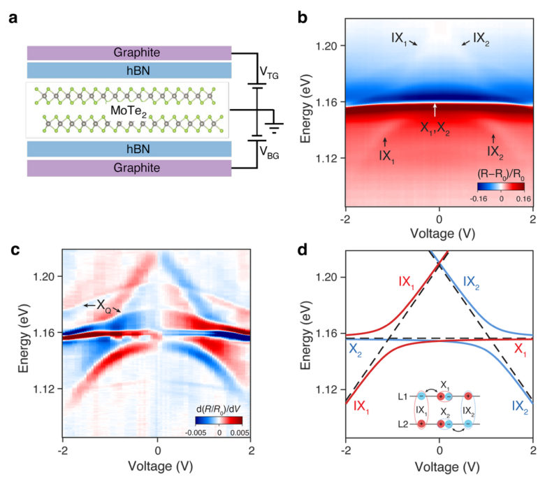
<figcaption class="paper-figure-caption"><b>Fig 1.</b> FIG. 1. Intralayer and interlayer excitons in a MoTe2 bilayer. a, Schematic of a MoTe2 bilayer heterostructure with dual, top and bottom-gate control. The bilayer MoTe2 is encapsulated by two hBN multilayers, with thicknesses of 8 nm (top) and 4.5 nm (bottom). b, c, Electric-field- dependent reflectance contrast (𝑅−𝑅!) /𝑅!, where 𝑅! is the baseline reflectance measured on the same spot at a highly hole-doped gate voltage (b) Reflectance contrast as a function of top gate voltage VTG, and its voltage derivative (c) when the materials are nearly intrinsic: VBG = − 0.556 VTG at T = 6.5 K. X1 and X2 denote intralayer K-valley excitons, IX1 and IX2 denote interlayer excitons with finite...</figcaption>
</figure>
<figure class="paper-figure-card">
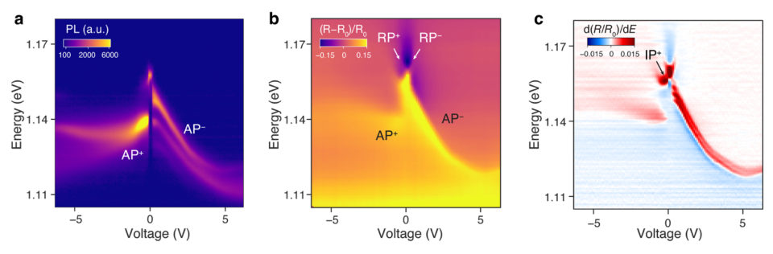
<figcaption class="paper-figure-caption"><b>Fig 2.</b> FIG. 2. Doping-dependent exciton spectroscopy of a MoTe2 bilayer under zero electric field. a, Doping-dependent photoluminescence (PL) spectra under a 635 nm laser excitation as a function of top gate voltage (VTG), with the gate voltage determined as VBG = 0.556VTG. The PL intensity is shown using a square-root color scale to enhance the dynamic range. b, Doping-dependent reflectance contrast (𝑅−𝑅!) /𝑅! and c, its energy derivative. Here 𝑅! is the baseline reflectance measured from a nearby bare gold electrode (see Appendix B). AP± and RP± denote attractive and repulsive polarons, respectively, while IP+ denotes the interlayer polaron observed on the hole- doped side. The + (−) superscript...</figcaption>
</figure>
<figure class="paper-figure-card">
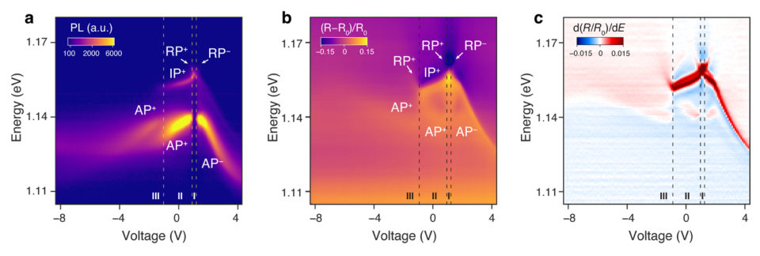
<figcaption class="paper-figure-caption"><b>Fig 3.</b> FIG. 3. Doping-dependent exciton spectroscopy of a MoTe2 bilayer under a finite electric field. a, Doping-dependent PL spectra under a 635 nm laser excitation as a function of top gate voltage (VTG), with the gate voltage determined as VBG = 0.556VTG − 1.112V. The PL intensity is shown using a square-root color scale to enhance the dynamic range. b, Doping-dependent reflectance contrast (𝑅−𝑅!) /𝑅! and c, its energy derivative. Here 𝑅! is the baseline reflectance measured on the gold electrode (see Appendix B). AP± and RP± denote attractive and repulsive polarons, respectively, while IP+ denotes the interlayer polaron observed on the hole-doped side. The + (−) superscript indicates hole...</figcaption>
</figure>
<figure class="paper-figure-card">
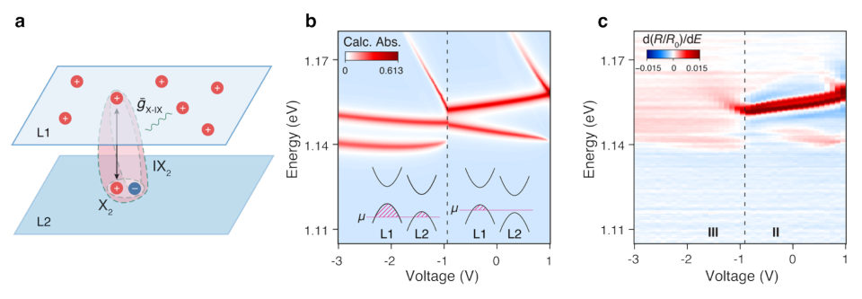
<figcaption class="paper-figure-caption"><b>Fig 4.</b> FIG. 4. Theory of interlayer polarons in a MoTe2 bilayer. a, Illustration of a hybridized intralayer exciton between X2 and IX2 and its coupling to the hole Fermi sea in the opposite MoTe2 layer. b, T-matrix-based theoretical calculation of the absorption spectrum. The insets show the band diagram and hole occupation of layer 1 (L1) and layer 2 (L2) under a finite electric-field while changing the chemical potential. In region II, only one layer is hole-doped, whereas in region III, both layers are doped. c, Experimental energy-derivative reflectance data under the same gating conditions show excellent agreement between theory and experiment.</figcaption>
</figure>
</div>

<p><strong>Summary.</strong> This work reports on the study of Fermi polarons in bilayer MoTe2, a TMD that provides a clean platform for such research. By tuning the electric field and doping, the researchers observe multiple polaron branches whose formation is governed by the layer pseudospin. This establishes a theoretical and experimental framework for understanding complex many-body states in vdW heterostructures.</p>
<p><strong>Why it may be interesting.</strong> The explicit modeling of pseudospin structure in both the impurity and the bath to reshape polaron formation is highly relevant to understanding correlated phases in low-dimensional quantum materials, bridging concepts from quantum optics and condensed matter theory.</p>
<details>
<summary>Detailed structure</summary>
<p><strong>Main problem.</strong> The paper investigates the formation and properties of Fermi polarons in bilayer Transition Metal Dichalcogenides (TMDs), focusing on how the layer pseudospin influences these many-body states.</p>
<p><strong>Main result.</strong> They demonstrate that bilayer MoTe2 retains a direct optical bandgap, allowing the observation of multiple, tunable polaron branches whose structure is dictated by the interplay between carrier doping and an out-of-plane electric field.</p>
<p><strong>Method.</strong> The study combines experimental exciton spectroscopy (PL and reflectance) with a quantitative field-theoretic model based on the T-matrix approach.</p>
<p><strong>Model / system.</strong> The system is bilayer MoTe2, a TMD, studied in a dual-gated device. The physics involves excitons interacting with a free carrier Fermi sea, where both components carry a layer pseudospin.</p>
<p><strong>Key observables.</strong> Multiple polaron branches ($   ext{AP}^{\pm}$, $   ext{RP}^{\pm}$, $   ext{IP}^+$), redshift/blueshift of spectral features, and the evolution of the excitonic spectrum with doping.</p>
<p><strong>Important parameters / regimes.</strong> Out-of-plane electric field ($V_{	ext{BG}}$), electrostatic doping (carrier density), and the layer pseudospin structure.</p>
<p><strong>Assumptions / limitations.</strong> The theoretical modeling relies on a T-matrix approach and assumes a simplified electrostatic model for calculating electric fields and doping densities.</p>
<p><strong>Figures summary.</strong> Figures illustrate the device schematic, field-dependent reflectance maps showing interlayer excitons ($   ext{IX1}$, $    ext{IX2}$), and energy-derivative spectra showing the evolution of polaron branches across different doping regimes.</p>
<p><strong>Paper structure.</strong> The paper first establishes MoTe2 as a clean platform due to its direct bandgap. It then systematically explores the doping- and electric-field-dependent evolution of the excitonic spectrum into distinct polaron branches, supported by both experimental measurements and theoretical fitting.</p>
</details>
<details>
<summary>Abstract</summary>
<p>Atomic bilayers of transition metal dichalcogenides (TMDs) host quantum phases governed by the layer degree of freedom, including bilayer Wigner crystals, fractional Chern insulators, and exciton condensates. These phases are probed primarily through exciton spectroscopy, yet it remains poorly understood how excitons and carriers interact to form Fermi polarons in bilayers, where both the impurity and the Fermi sea carry a layer pseudospin. Progress has been limited because most TMD bilayers have momentum-indirect optical bandgaps, in which non-radiative decay and inhomogeneous broadening obscure the intrinsic spectra. Here, we show that bilayer MoTe$_2$, unlike most TMD bilayers, retains a direct optical bandgap, providing a clean platform for studying bilayer Fermi-polaron physics. In a dual-gated device, an out-of-plane electric field continuously tunes the hybridization between intralayer and interlayer excitons, forming layer-coherent excitons. Upon electrostatic doping, the excitonic spectrum evolves into multiple polaron branches, controlled by both carrier doping and the out-of-plane electric field. Among these, we identify a polaron with no analog in monolayers, in which a layer-coherent exciton is dressed by carriers in the opposite layer, and is quantitatively captured by our field-theoretic model. Our results establish that pseudospin structure in both the impurity and the bath reshapes polaron formation, opening new avenues to many-body states such as Bose-Einstein condensates with interlayer coherence.</p>
</details>
<p><sub><a href="#top">↑ back to top</a></sub></p>

<p><a id="paper-2609.38139"></a></p>
<h3 id="local-autonomous-inference-machines-for-quantum-ldpc-codes"><a href="http://arxiv.org/abs/2609.38139v1">Local autonomous inference machines for quantum LDPC codes</a></h3>
<p><strong>Authors:</strong> Siddhant Midha, Dmitry A. Abanin<br>
<strong>Type:</strong> theory · <strong>Category:</strong> disordered systems and neural networks · <strong>PDF:</strong> <a href="https://arxiv.org/pdf/2609.38139v1">https://arxiv.org/pdf/2609.38139v1</a><br>
<strong>Analysis basis:</strong> full PDF text, analyzed in chunks
<strong>Topic relevance:</strong> <code>methods for driven-dissipative</code> <strong>3/5</strong> · <code>quantum measurements</code> <strong>3/5</strong> · <code>analog quantum simulation</code> <strong>2/5</strong> · <code>correlated / nonlocal dissipation</code> <strong>1/5</strong> · <code>driven-dissipative phase transition</code> <strong>1/5</strong> · <code>non-equilibrium universality</code> <strong>1/5</strong></p>
<div class="figure-strip-hint">↔ Scroll figures horizontally</div>
<div class="paper-figures-scroll">
<figure class="paper-figure-card">
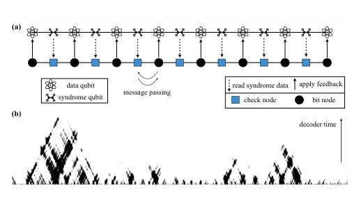
<figcaption class="paper-figure-caption"><b>Fig 1.</b> FIG. 1. Local autonomous inference. (a) We consider the quantum processor, the device consisting of data qubits undergoing Z−errors and syndrome qubits performing per- fect measurements laid out according to the X−parity check matrix HX. A series of classical processors performing mes- sage passing is laid out with the same geometry as the device. The device provides local information to the processors with syndrome data, and feedback is applied back onto the device. (b) Example trajectory of the residual error on the device as a function of decoder time (going upwards) on the repetition code with d = 2000 at physical error rate p = 0.45.</figcaption>
</figure>
<figure class="paper-figure-card">
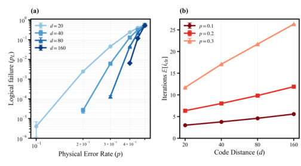
<figcaption class="paper-figure-caption"><b>Fig 2.</b> FIG. 2. Discrete local inference dynamics. (a) Logical error rates pL as a function of physical error rate p for the repetition code with distances d ∈{20, 40, 80, 160}. (b) Aver- age clearing iteration E[iclr] as a function of code distance d.</figcaption>
</figure>
<figure class="paper-figure-card">
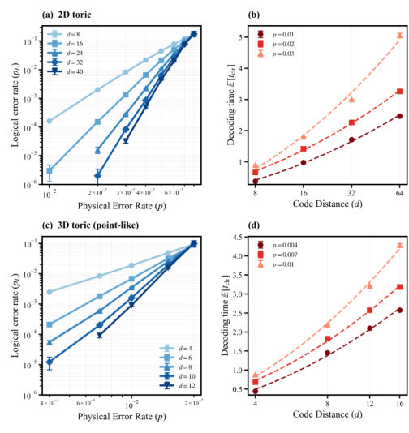
<figcaption class="paper-figure-caption"><b>Fig 3.</b> FIG. 3. Local inference on toric codes. Logical error rates and expected clearing time on the (a-b) two-dimensional toric code and (c-d) point-like sector of the three-dimensional toric code. The fits are of the form E[tclr] = ap(log d)2 + bp for p−dependent constants ap, bp.</figcaption>
</figure>
<figure class="paper-figure-card">
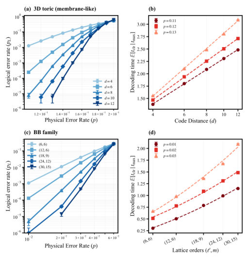
<figcaption class="paper-figure-caption"><b>Fig 4.</b> FIG. 4. Local inference on LDPC codes. Logical er- ror rates and expected clearing time (for convergence in t ≤tmax = 1000) for the (a-b) membrane-like sector of the three-dimensional toric code with a fit E[tclr] = ap(log d)+bp, and (c-d) a family of bivariate-bicycle codes including the Gross code with a fit E[tclr] = ap(log √</figcaption>
</figure>
</div>

<p><strong>Summary.</strong> This work proposes a novel, local, and distributed inference machine for decoding quantum LDPC codes. By replacing global decoding steps with local, belief-guided measurements and feedback, the framework successfully demonstrates error correction threshold behavior in regimes where traditional Belief Propagation fails. This advances the feasibility of building fault-tolerant quantum computation using local physical processes.</p>
<p><strong>Why it may be interesting.</strong> The concept of mapping complex quantum error correction tasks onto local, autonomous, feedback-driven dynamics is highly relevant to building physical quantum hardware, bridging theoretical quantum information with physical implementation constraints.</p>
<details>
<summary>Detailed structure</summary>
<p><strong>Main problem.</strong> The paper addresses the challenge of developing a local and distributed framework for decoding quantum Low-Density Parity-Check (LDPC) codes, aiming to realize error correction as a local, non-equilibrium process.</p>
<p><strong>Main result.</strong> The proposed local inference machine exhibits threshold behavior for quantum LDPC codes in sectors (like point-like sectors of the toric code) where conventional Belief Propagation (BP) decoding fails.</p>
<p><strong>Method.</strong> The authors construct an autonomous inference machine that uses local measurements and feedback based on local marginal information derived from BP, rather than requiring global consistency.</p>
<p><strong>Model / system.</strong> The system involves quantum LDPC codes defined on qubits, analyzed using a Tanner graph structure. The dynamics are modeled through local message passing, discrete time steps, and continuous-time Poisson clock updates.</p>
<p><strong>Key observables.</strong> Decoding Threshold ($p_{th}$), Logical Error Rate ($p_L$), and Syndrome Clearing Time ($t_{clr}$).</p>
<p><strong>Important parameters / regimes.</strong> Physical error rate ($p$), Code distance ($d$), and the local belief information ($ ext{Pr}_{   ext{BP}}(e_v|s)$).</p>
<p><strong>Assumptions / limitations.</strong> The analysis assumes the use of CSS quantum codes on qubits and relies on the local inference engine (BP) providing sufficient local marginal information even when globally inconsistent.</p>
<p><strong>Figures summary.</strong> Figures illustrate the local autonomous inference setup, showing error trajectories for repetition codes, and comparing $p_L$ vs $p$ and $t_{clr}$ for 2D and 3D toric codes under various noise conditions.</p>
<p><strong>Paper structure.</strong> The paper first introduces the local autonomous inference framework, showing its equivalence to standard BP for some codes. It then demonstrates its effectiveness on codes where standard BP fails, analyzing dynamics in discrete and continuous time for various code geometries.</p>
</details>
<details>
<summary>Abstract</summary>
<p>We introduce a local and distributed framework for decoding quantum LDPC codes. Built atop belief propagation (BP), the architecture combines strictly local processing of syndrome information, local feedback, autonomous operation, and highly parallelized decoding. We establish the framework at two complementary levels. First, we show that any code exhibiting a threshold under iterative BP decoding can be promoted to an autonomous local measurement-and-feedback dynamics while preserving that threshold. We then turn to codes for which naive BP does not itself exhibit threshold behavior. Our key observation is that BP can nevertheless provide sufficiently accurate \emph{local} marginal information: active syndrome defects use these local beliefs to \emph{move}, pair, and annihilate through asynchronous feedback. We demonstrate numerically that this construction exhibits threshold behavior in the point-like sectors of the two- and three-dimensional toric codes, where conventional BP decoding fails. Exploiting the graph-generality of BP, we then study the inference dynamics on the membrane-like sector of the three-dimensional toric code and in a family of bivariate-bicycle quantum LDPC codes.</p>
</details>
<p><sub><a href="#top">↑ back to top</a></sub></p>

<p><a id="paper-2609.37099"></a></p>
<h3 id="constructing-and-probing-three-boundary-booklet-geometries"><a href="http://arxiv.org/abs/2609.37099v1">Constructing and Probing Three-Boundary Booklet Geometries</a></h3>
<p><strong>Authors:</strong> Yan Liu, Shaodong Zhou<br>
<strong>Type:</strong> theory · <strong>Category:</strong> other · <strong>PDF:</strong> <a href="https://arxiv.org/pdf/2609.37099v1">https://arxiv.org/pdf/2609.37099v1</a><br>
<strong>Analysis basis:</strong> full PDF text, analyzed in chunks
<strong>Topic relevance:</strong> <code>Full counting statistics</code> <strong>3/5</strong> · <code>Keldysh / 2PI / non-Gaussian methods</code> <strong>2/5</strong> · <code>methods for driven-dissipative</code> <strong>2/5</strong> · <code>quantum measurements</code> <strong>2/5</strong> · <code>analog quantum simulation</code> <strong>1/5</strong></p>
<div class="figure-strip-hint">↔ Scroll figures horizontally</div>
<div class="paper-figures-scroll">
<figure class="paper-figure-card">
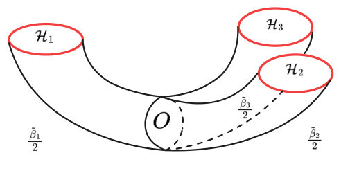
<figcaption class="paper-figure-caption"><b>Fig 1.</b> Figure 1: Schematic Euclidean path integral preparing a PETS3 state. The three Euclidean legs meet at a common heavy junction insertion. The transverse section of each leg represents the spatial sphere Sd−1, while its axial direction represents Euclidean evolution.</figcaption>
</figure>
<figure class="paper-figure-card">
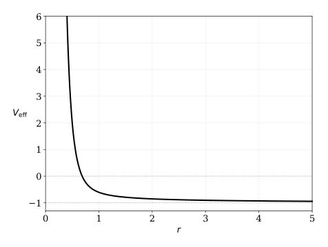
<figcaption class="paper-figure-caption"><b>Fig 2.</b> Figure 2: A mixed-orientation solution of the quartic junction equation (3.13) for three thermal- AdS pages (µi = 0) with d = 4, m = 1, G = 1, L1 = 1, L2 = L3 = 2. The physical branch has orientation (−, +, +), approaches Veff →−1 at large radius, and crosses Veff = 0 at the turning point r∗.</figcaption>
</figure>
<figure class="paper-figure-card">
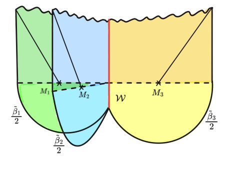
<figcaption class="paper-figure-caption"><b>Fig 3.</b> Figure 3: Schematic of the BH|BH|BH branch: all three pages are black holes connected through the booklet shell worldvolume.</figcaption>
</figure>
<figure class="paper-figure-card">
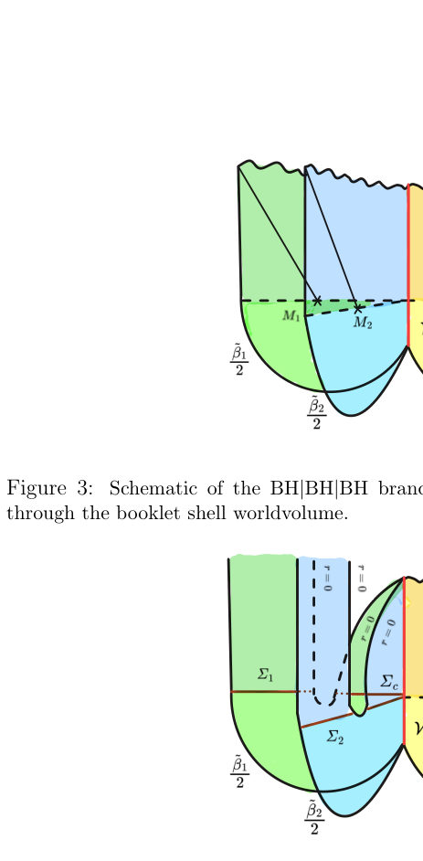
<figcaption class="paper-figure-caption"><b>Fig 4.</b> Figure 4: Schematic of the AdS|AdS|BH branch.</figcaption>
</figure>
<figure class="paper-figure-card">
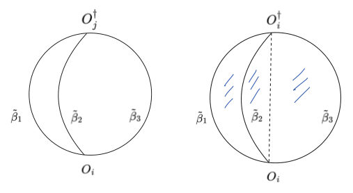
<figcaption class="paper-figure-caption"><b>Fig 5.</b> Figure 5: Euclidean path integrals for overlaps of single-shell PETS3 states, with the transverse Sd−1 suppressed. (a) Path integral for the overlap ⟨Ψmj|Ψmi⟩between two distinct PETS3 states. (b) Overlap ⟨Ψmi|Ψmi⟩with identical shell operators. The dashed line is the trajectory of the dust shell in the dual bulk.</figcaption>
</figure>
</div>

<p><strong>Summary.</strong> This work constructs a theoretical framework for three-boundary black hole microstates ($  ext{PETS}_3$) by generalizing previous two-boundary models. By applying a heavy-operator probe, the authors calculate a diagnostic ratio ($Z_D/Z_U$) that predicts a value of 3 for three boundaries, distinguishing it from the two-boundary case. This suggests a powerful tool for probing the topology of quantum gravitational states.</p>
<p><strong>Why it may be interesting.</strong> While focused on gravity/QFT, the methodology of using entanglement structure (PETS) and counting states (Gram matrix rank) to probe geometric properties is highly relevant to understanding entanglement structure in complex quantum systems.</p>
<details>
<summary>Detailed structure</summary>
<p><strong>Main problem.</strong> The paper generalizes the description of black hole microstates from two-boundary systems to three-boundary systems, motivated by geometries beyond simple single-manifold duals.</p>
<p><strong>Main result.</strong> The three-boundary construction yields a detection-to-universal ratio ($Z_D/Z_U$) of $\simeq 3$, which is exactly twice the value found for the two-boundary case ($3/2$), suggesting a diagnostic tool to distinguish the number of boundaries.</p>
<p><strong>Method.</strong> The authors use a heavy-operator probe applied to three-boundary Partially Entangled Thermal States ($  ext{PETS}_3$) and constrain the resulting bulk geometry using the Israel junction condition.</p>
<p><strong>Model / system.</strong> The model involves three-boundary booklet geometries, where the state is defined by a trivalent junction tensor and is constrained by multiway Israel junction conditions. The system is analyzed using Euclidean path integrals and state counting techniques.</p>
<p><strong>Key observables.</strong> Detection-to-universal ratio ($Z_D/Z_U$), connected overlaps, and the rank of the Gram matrix.</p>
<p><strong>Important parameters / regimes.</strong> Three-boundary junction tensor, AdS radii ($L_i$), and the effective temperature ($eta_{	ext{eff}}$).</p>
<p><strong>Assumptions / limitations.</strong> The analysis relies on an ETH-inspired statistical ansatz for junction amplitudes and approximations based on coarse-graining and saddle-point evaluations.</p>
<p><strong>Figures summary.</strong> Figures illustrate the structure of 3-shell states and show how the detection-to-universal ratio is calculated using saddle-point contributions from universal and detection geometries.</p>
<p><strong>Paper structure.</strong> The paper progresses from defining the $   ext{PETS}_3$ state via a junction tensor, deriving the constraints from the Israel junction condition, and finally calculating the state overlap and the diagnostic ratio $Z_D/Z_U$ using heavy-operator probes.</p>
</details>
<details>
<summary>Abstract</summary>
<p>Partially entangled thermal states (PETS) provide semiclassical families of black-hole microstates prepared through heavy shell insertions. We extend this shell-state framework and propose three-boundary partially entangled thermal states (PETS$_3$) by replacing the two-index insertion data with a trivalent junction tensor. The corresponding bulk three-boundary booklet geometry is constrained semiclassically by the Israel junction condition, allowing us to identify candidate symmetric and mixed-orientation branches. We verify the self-consistency of this construction by counting states in the symmetric all-black-hole sector. Using a heavy-operator probe, we further estimate the detection-to-universal ratio to be $Z_D/Z_U \simeq 3$, twice the two-boundary value of $3/2$. These results suggest that a fine-tuned probe localized on one boundary can test the proposed three-boundary shell state and potentially distinguish it from its two-boundary counterpart.</p>
</details>
<p><sub><a href="#top">↑ back to top</a></sub></p>

<p><a id="paper-2609.36293"></a></p>
<h3 id="delay-induced-multistability-in-one-dimensional-swarmalators-with-common-intrinsic-frequency"><a href="http://arxiv.org/abs/2609.36293v1">Delay-induced multistability in one-dimensional swarmalators with common intrinsic frequency</a></h3>
<p><strong>Authors:</strong> Rommel Tchinda Djeudjo, Timoteo Carletti, Kevin P. O'Keeffe<br>
<strong>Type:</strong> theory · <strong>Category:</strong> statistical mechanics · <strong>PDF:</strong> <a href="https://arxiv.org/pdf/2609.36293v1">https://arxiv.org/pdf/2609.36293v1</a><br>
<strong>Analysis basis:</strong> full PDF text, analyzed in chunks
<strong>Topic relevance:</strong> <code>driven-dissipative phase transition</code> <strong>3/5</strong> · <code>non-equilibrium universality</code> <strong>3/5</strong> · <code>analog quantum simulation</code> <strong>2/5</strong> · <code>Frenkel-Kontorova</code> <strong>1/5</strong> · <code>methods for driven-dissipative</code> <strong>1/5</strong></p>
<div class="figure-strip-hint">↔ Scroll figures horizontally</div>
<div class="paper-figures-scroll">
<figure class="paper-figure-card">
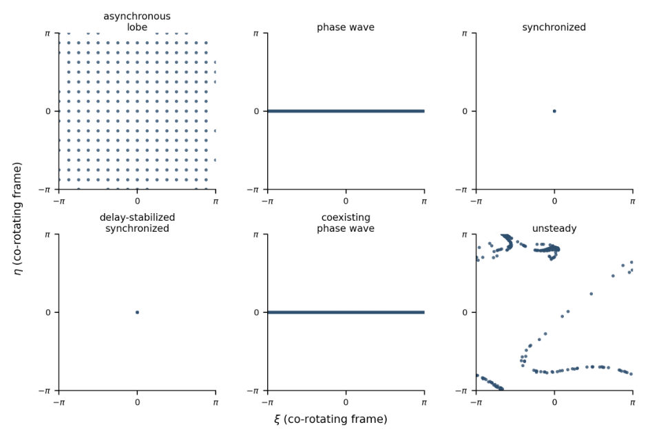
<figcaption class="paper-figure-caption"><b>Fig 1.</b> Figure 1. Representative states for the identical-frequency delayed model in the (ξ, η) plane. Each panel is shown in an appropriate co-moving frame: for a branch with frequencies (Ωξ, Ωη) we plot (ξi −Ωξt, ηi −Ωηt) modulo 2π. The first row shows the asynchronous lobe (K, τ) = (0.90, 1.60), the phase wave (0.50, 0.10), and the synchronized state (2.00, 8.00). The second row shows a delay-stabilized synchronized state with negative same-coordinate coupling (−1.60, 0.50), a phase wave in a phase-wave/synchronized coexistence region (1.05, 7.00), and an unsteady trajectory at a point with no stable canonical branch (0.50, 0.50). Here J = 1 and ω = π/2. All states except the delay-stabilized...</figcaption>
</figure>
<figure class="paper-figure-card">
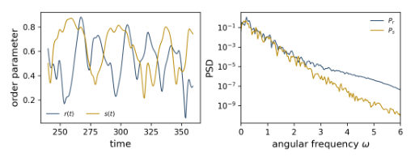
<figcaption class="paper-figure-caption"><b>Fig 2.</b> Figure 2. Representative leftover point with no stable canoni- cal branch, (K, τ) = (0.50, 0.50) (same parameters as Fig. 1). Left: order-parameter time series r(t), s(t). Right: Welch power spectra of r and s, showing sharp peaks at a domi- nant frequency and its harmonics (period ≈30) rather than broadband noise. The 0-1 test of Gottwald and Melbourne [51] gives Kr ≈0.02, Ks ≈0.03, indicating regular (peri- odic/quasiperiodic) macroscopic dynamics, not chaos.</figcaption>
</figure>
<figure class="paper-figure-card">
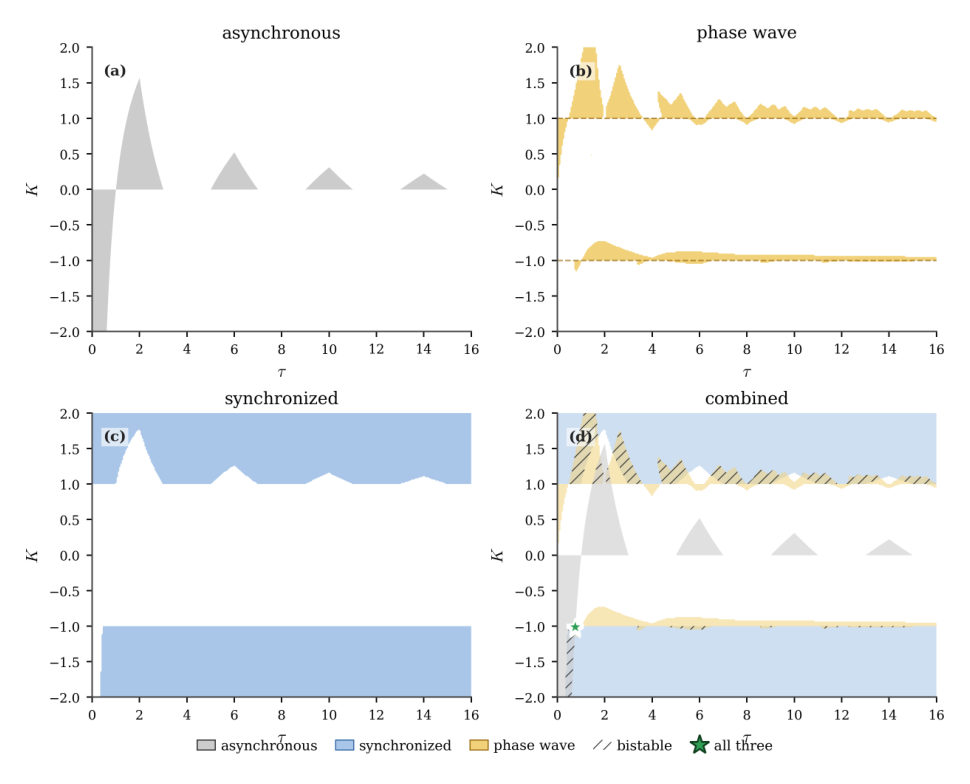
<figcaption class="paper-figure-caption"><b>Fig 3.</b> Figure 3. Stability regions for J = 1 and ω = π/2. (a) The asynchronous region (active-mode stability: damping of the first-harmonic order-parameter sector, neutral higher harmonics excluded) is the exact set of incoherence lobes of the delayed Kuramoto model [Eqs. (9), (10)]. (b) The phase-wave region (gold): a small region near 0 &lt; K &lt; J at low delay plus thin bands that hug the exact real boundary K = ±J (dashed, from λ = 0 in Eq. (27)); brown curves are representative analytic Hopf branches [Eqs. (31)–(33)]. The region is cross-validated by argument-principle root counting (App. C). (c) The synchronized stable region (blue): rotating branches satisfying Eq. (18), which requires cos(Ωτ)...</figcaption>
</figure>
<figure class="paper-figure-card">
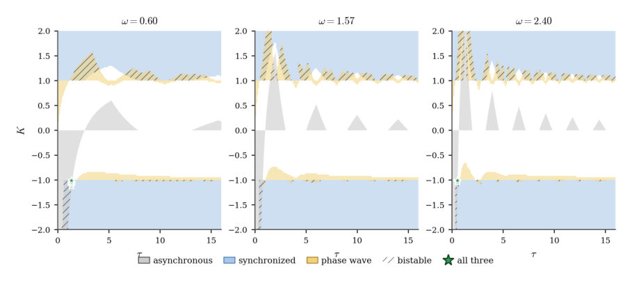
<figcaption class="paper-figure-caption"><b>Fig 4.</b> Figure 4. Dependence of the combined stability diagram on the common frequency. The same color convention as Fig. 3 is used. Increasing ω shifts the positive-K asynchronous lobes to smaller τ and narrows them in τ, while raising their K ceiling (K &lt; ω/(2m −1)) and fitting more lobes into the window; the delay-selected coexistence between canonical branches persists. These panels use the same stability tests as Fig. 3.</figcaption>
</figure>
</div>

<p><strong>Summary.</strong> This work analyzes a delayed 1D swarmalator model with a common intrinsic frequency, revealing that the system can host three distinct, simultaneously stable dynamical states. The key finding is the existence of a narrow parameter window where asynchronous, synchronized, and phase wave states coexist. This demonstrates how delay and non-zero intrinsic frequencies can induce complex, non-trivial multistability in non-equilibrium many-body systems.</p>
<p><strong>Why it may be interesting.</strong> The emergence of complex, delay-induced multistability in a classical, non-equilibrium system provides a rich analogy for understanding pattern formation and multiple stable phases in open quantum systems or driven many-body dynamics.</p>
<details>
<summary>Detailed structure</summary>
<p><strong>Main problem.</strong> The study investigates delay-induced multistability in a one-dimensional swarmalator model when all interacting units share a common non-zero intrinsic frequency.</p>
<p><strong>Main result.</strong> The system exhibits a striking triple coexistence of three distinct stable states—asynchronous, synchronized, and phase wave—in a narrow parameter window, a phenomenon enabled by the non-zero common frequency and delay.</p>
<p><strong>Method.</strong> The analysis combines stability theory (linearization, Fourier mode analysis) with numerical simulations, including direct perturbation-norm checks, to map out complex parameter regimes.</p>
<p><strong>Model / system.</strong> The model is a delayed one-dimensional swarmalator on a ring, described by coupled equations of motion involving spatial and phase couplings ($K$ and $J$) and a time delay ($  au$).</p>
<p><strong>Key observables.</strong> Order parameters ($r, s$), stability boundaries in the $(K, 	au)$ plane, and the persistence/decay rates of perturbations ($\Delta f$).</p>
<p><strong>Important parameters / regimes.</strong> Common intrinsic frequency ($\omega$), coupling constants ($K, J$), and time delay ($   au$).</p>
<p><strong>Assumptions / limitations.</strong> The analysis relies heavily on linear stability theory and perturbation methods, although the authors note that quasiperiodic or transient dynamics cannot be entirely excluded.</p>
<p><strong>Figures summary.</strong> Figure 3 maps the stability regions showing the coexistence of the three canonical states; other figures illustrate power spectra and stability dependence on $\omega$.</p>
<p><strong>Paper structure.</strong> The paper systematically analyzes the stability of three canonical states (asynchronous, synchronized, phase wave) under a common frequency $\omega$, culminating in the demonstration and characterization of the triple coexistence region.</p>
</details>
<details>
<summary>Abstract</summary>
<p>We study the delayed one-dimensional swarmalator model when all units share a common intrinsic frequency ω. Unlike the zero-frequency case, ω cannot be removed by a rotating-frame transformation because delayed interactions retain the phase accumulated over the lag. The result is a two-order-parameter analogue of the delayed Kuramoto model: the asynchronous state acquires incoherence lobes, the synchronized state becomes a rotating branch stable even when both the spatial and phase couplings are repulsive, and the phase wave develops narrow resonant stability bands. These delay-selected windows overlap to produce broad branch coexistence, including a narrow window near K=-J where all three canonical states-asynchronous, phase wave, and synchronized-are simultaneously stable. In regions where no canonical branch is stable, the order parameters oscillate persistently.</p>
</details>
<p><sub><a href="#top">↑ back to top</a></sub></p>

<p><a id="paper-2609.36861"></a></p>
<h3 id="exact-trotterization-in-the-degenerate-quantum-rabi-model"><a href="http://arxiv.org/abs/2609.36861v1">Exact Trotterization in the Degenerate Quantum Rabi Model</a></h3>
<p><strong>Authors:</strong> I. Lizuain, A. Rodriguez-Prieto<br>
<strong>Type:</strong> theory · <strong>Category:</strong> other · <strong>PDF:</strong> <a href="https://arxiv.org/pdf/2609.36861v1">https://arxiv.org/pdf/2609.36861v1</a><br>
<strong>Analysis basis:</strong> full PDF text, analyzed in chunks
<strong>Topic relevance:</strong> <code>Tavis-Cummings &amp; cavity-many-emitter</code> <strong>3/5</strong> · <code>analog quantum simulation</code> <strong>3/5</strong> · <code>quantum measurements</code> <strong>2/5</strong> · <code>driven-dissipative phase transition</code> <strong>1/5</strong> · <code>methods for driven-dissipative</code> <strong>1/5</strong></p>
<div class="figure-strip-hint">↔ Scroll figures horizontally</div>
<div class="paper-figures-scroll">
<figure class="paper-figure-card">

<figcaption class="paper-figure-caption"><b>Fig 1.</b> FIG. 1. Revival probability S(t) as a function of time in the degenerate limit ω0 = 0. (a) Initial state |g, 0⟩for different coupling strengths λ = g/ω, ranging from the SC to the DSC regime of the QRM. (b) Fixed coupling strength λ = 2 for in- creasing photon numbers n in the initial state |g, n⟩, showing secondary peaks separated by the zeros of the Laguerre poly- nomial Ln. In both panels, S(t) is independent of the initial qubit state: any superposition c+ |+, n⟩+ c−|−, n⟩yields the same dynamics, as shown in the text.</figcaption>
</figure>
<figure class="paper-figure-card">

<figcaption class="paper-figure-caption"><b>Fig 2.</b> FIG. 2. Phase-space trajectories of ⟨a(t)⟩over one full period T = 2π/ω for the exact evolution (thick continuous curves) and the first-order Trotterized dynamics with 15 Trotter steps (dashed polygonal paths with open circles at the vertices γk), shown for increasing coupling strengths λ = 0.5, 1.0, 2.0 (blue, pink, orange). The calculations are performed for ini- tial states |+, 0⟩and |−, 0⟩, which have maximal qubit po- larization ⟨σx⟩= ±1 and therefore trace orbits of maximum radius λ. All trajectories start and end at the origin (black dot), since ⟨a⟩= 0 at t = 0 and both the exact and the Trotterized amplitudes return to zero after one full period. Trajectories displaced to the left...</figcaption>
</figure>
<figure class="paper-figure-card">

<figcaption class="paper-figure-caption"><b>Fig 3.</b> FIG. 3. Phase-space trajectories of ⟨a(t)⟩for the exact evolu- tion (blue circle), the first-order Trotterized simulation with 7 steps (red polygon), and the continuously evolved renormal- ized model with coupling eλ and phase −θ/2 (black circle). The polygon vertices fall exactly on the black circle, confirm- ing that the Trotterized dynamics reproduces the renormal- ized model exactly. Crosses mark the exact and effective circle centers, −λ and −eλe−iθ/2, the latter rotated by −θ/2 relative to the former, as indicated by the arc. Parameters: λ = 2, initial state |+, 0⟩.</figcaption>
</figure>
<figure class="paper-figure-card">

<figcaption class="paper-figure-caption"><b>Fig 4.</b> FIG. 4. Fidelity F as a function of simulation parameters for coupling ratio λ = g/ω = 2. (a) Fidelity F(tk) vs. time for an initial state with n = 0 photons and different numbers of Trot- ter steps per period, showing exact revivals at multiples of the oscillation period T = 2π/ω, independently of the step size. The fidelity decay between revivals decreases as the number of steps increases, consistent with convergence to the exact dynamics in the continuum limit δt →0. Open circles mark the actual (discrete) Trotterized values F(tk); for each curve, the solid line is the smooth function obtained by formally extending Eq. (34) to continuous t at that curve’s own step size θ = 2π/nsteps...</figcaption>
</figure>
</div>

<p><strong>Summary.</strong> This theoretical paper provides an exact characterization of Trotterization errors for simulating the Quantum Rabi Model in the deep strong coupling regime. By analyzing the degenerate limit, the authors show the error manifests as a predictable geometric renormalization of the phase-space trajectory. Crucially, they derive a method to exactly cancel this error by modifying the Trotter-step coupling to a complex amplitude.</p>
<p><strong>Why it may be interesting.</strong> This work provides a deep, geometric understanding of systematic errors in quantum simulation, showing that the error structure itself is governed by the same underlying physics (displaced Fock state distinguishability) as the physical phenomena being simulated.</p>
<details>
<summary>Detailed structure</summary>
<p><strong>Main problem.</strong> The paper addresses the need for an exact characterization of Trotterization errors when digitally simulating the Quantum Rabi Model (QRM) in the deep strong coupling regime.</p>
<p><strong>Main result.</strong> The first-order Trotter operator generates a phase-space trajectory that is exactly a rescaled and rotated version of the true path, and this geometric error is exactly correctable by modifying the Trotter-step coupling to a complex amplitude.</p>
<p><strong>Method.</strong> The authors derived closed-form expressions for the first-order Trotter operator and analyzed the resulting state fidelity by mapping the error to a geometric renormalization problem in phase space.</p>
<p><strong>Model / system.</strong> The system is the Quantum Rabi Model (QRM), describing the interaction between a two-level system (qubit) and a bosonic mode. The analysis is performed in the exactly solvable degenerate limit ($\omega_0 = 0$), simplifying the Hamiltonian to $H = \omega a^\dagger a + g \sigma_x(a + a^\dagger)$.</p>
<p><strong>Key observables.</strong> State fidelity ($F(t)$), survival probability ($S(t)$), and the phase-space trajectory of the bosonic annihilation operator $\langle a(t) 
angle$.</p>
<p><strong>Important parameters / regimes.</strong> Deep Strong Coupling (DSC) regime ($g \gtrsim \omega \gg \omega_0$), the coupling strength $g$, and the time step $\delta t$.</p>
<p><strong>Assumptions / limitations.</strong> The derived closed-form results are strictly limited to the degenerate limit ($\omega_0 = 0$); extension to $\omega_0 
eq 0$ requires numerical methods.</p>
<p><strong>Figures summary.</strong> Figure 1 shows the revival probability $S(t)$ vs. time for the degenerate limit. Figure 2 compares exact vs. Trotterized phase-space trajectories. Figure 3 compares exact, Trotterized, and renormalized phase-space evolution. Figure 4 shows the fidelity $F$ vs. time, demonstrating exact revivals.</p>
<p><strong>Paper structure.</strong> The paper establishes the physical problem in the DSC regime, derives the closed-form error characterization in the degenerate limit, shows the geometric renormalization of the error, and finally proposes an exact, cost-free correction mechanism.</p>
</details>
<details>
<summary>Abstract</summary>
<p>Digital quantum simulation of the quantum Rabi model in the deep strong coupling regime motivates the need for an exact characterization of Trotterization errors, so far known only through qualitative bounds. Here we derive such a characterization in the exactly solvable degenerate limit, valid for arbitrary coupling strength. The first-order Trotter operator admits a closed expression, showing that the generated phase-space trajectory lies exactly on a circle that is rescaled and rigidly rotated with respect to the exact one, rather than merely approximating it. This geometric renormalization yields a closed form for the state fidelity, structurally identical to the physical survival probability governing revivals in the deep strong coupling regime: both are the same geometric question -- the distinguishability of a displaced Fock state -- applied to two different pairs of points in phase space. We further show that this geometric error is exactly correctable by promoting the Trotter-step coupling to a complex amplitude, at no additional circuit cost. These results, obtained in the exactly solvable degenerate limit, provide a benchmark for Trotterization errors in the general Rabi model.</p>
</details>
<p><sub><a href="#top">↑ back to top</a></sub></p>

<p><a id="paper-2609.38160"></a></p>
<h3 id="optimal-tolerant-testing-of-lindbladian-dissipation"><a href="http://arxiv.org/abs/2609.38160v1">Optimal Tolerant Testing of Lindbladian Dissipation</a></h3>
<p><strong>Authors:</strong> Jinge Bao, Yiyi Cai, Zhong-Xia Shang<br>
<strong>Type:</strong> theory · <strong>Category:</strong> other · <strong>PDF:</strong> <a href="https://arxiv.org/pdf/2609.38160v1">https://arxiv.org/pdf/2609.38160v1</a><br>
<strong>Analysis basis:</strong> full PDF text, analyzed in chunks
<strong>Topic relevance:</strong> <code>methods for driven-dissipative</code> <strong>3/5</strong> · <code>quantum measurements</code> <strong>2/5</strong> · <code>Keldysh / 2PI / non-Gaussian methods</code> <strong>1/5</strong> · <code>analog quantum simulation</code> <strong>1/5</strong> · <code>correlated / nonlocal dissipation</code> <strong>1/5</strong> · <code>driven-dissipative phase transition</code> <strong>1/5</strong> · <code>non-equilibrium universality</code> <strong>1/5</strong></p>
<div class="figure-strip-hint">↔ Scroll figures horizontally</div>
<div class="paper-figures-scroll">
<figure class="paper-figure-card">

<figcaption class="paper-figure-caption"><b>Fig 1.</b> Low-resolution page preview, page 2</figcaption>
</figure>
<figure class="paper-figure-card">

<figcaption class="paper-figure-caption"><b>Fig 2.</b> Low-resolution page preview, page 3</figcaption>
</figure>
<figure class="paper-figure-card">

<figcaption class="paper-figure-caption"><b>Fig 3.</b> Low-resolution page preview, page 4</figcaption>
</figure>
<figure class="paper-figure-card">

<figcaption class="paper-figure-caption"><b>Fig 4.</b> Low-resolution page preview, page 5</figcaption>
</figure>
<figure class="paper-figure-card">

<figcaption class="paper-figure-caption"><b>Fig 5.</b> Low-resolution page preview, page 6</figcaption>
</figure>
</div>

<p><strong>Summary.</strong> This paper presents a theoretically optimal algorithm for 'tolerant property testing' of quantum dissipation. It determines the minimum time required to distinguish between two different levels of noise strength in an open quantum system. The result is significant because it provides a resource-efficient diagnostic tool applicable to a wider range of experimentally relevant quantum noise models.</p>
<p><strong>Why it may be interesting.</strong> This work provides a rigorous, resource-optimal framework for diagnosing noise in quantum experiments, which is crucial for understanding decoherence in any physical system, including those studied in AMO physics.</p>
<details>
<summary>Detailed structure</summary>
<p><strong>Main problem.</strong> The paper addresses the problem of optimally and efficiently determining the dissipative strength of an unknown, time-independent Lindblad generator within a specified tolerance.</p>
<p><strong>Main result.</strong> It establishes an optimal total evolution time complexity of O(epsilon_2 / (epsilon_2 - epsilon_1)^2) for distinguishing between two dissipative strength regimes, which is proven to be optimal even for adaptive protocols.</p>
<p><strong>Method.</strong> The authors develop an algorithm based on memoryless forward-evolution access to characterize the system dynamics, utilizing techniques from quantum property testing and state-functional estimation.</p>
<p><strong>Model / system.</strong> The system is an open quantum system governed by Lindblad dynamics, $\mathcal{L}(
ho) = -i[H, 
ho] + \mathcal{D}(
ho)$. The focus is on characterizing the dissipative part, $\mathcal{D}$, quantified by its normalized Frobenius norm.</p>
<p><strong>Key observables.</strong> The primary observable is the dissipative strength, $\|\mathcal{D}\|_F$, which is tested against thresholds $\epsilon_1$ and $\epsilon_2$. Secondary observables include the jump-state functional $h(\sigma)$ and the total jump rate $\Gamma$.</p>
<p><strong>Important parameters / regimes.</strong> The key parameters are the tolerance thresholds ($\epsilon_1, \epsilon_2$), the total evolution time $T$, and the accuracy $\eta$ required for estimation.</p>
<p><strong>Assumptions / limitations.</strong> The generator $\mathcal{L}$ is assumed to be time-independent and have a bounded norm. The analysis also considers the structure of the jump operators, noting improvements over prior bounded-degree requirements.</p>
<p><strong>Paper structure.</strong> The paper develops from the general challenge of characterizing dissipation to presenting a specific, time-optimal algorithm for tolerant testing, supported by matching lower bounds that establish the optimality of the derived time cost.</p>
</details>
<details>
<summary>Abstract</summary>
<p>Quantifying dissipation is essential for controlling quantum noise and characterizing open-system dynamics. In practical experimental settings, residual noise may still persist despite efforts to suppress it, making it important to determine whether the dissipative strength remains within a prescribed tolerance threshold. We study this question for an unknown, time-independent Lindblad generator with bounded strength, where the jump operators are local but with unrestricted overlap, using only memoryless forward-evolution access. The task is to distinguish dissipative strength of at most $\varepsilon_1$ from strength of at least $\varepsilon_2$, for $0 \leq \varepsilon_1 < \varepsilon_2$, measured in the canonical dissipator's normalized Frobenius norm. We give an algorithm that solves this task in total evolution time $O(\varepsilon_2/(\varepsilon_2-\varepsilon_1)^2)$ for all nontrivial thresholds, with constant success probability, and provide a matching lower bound $Ω(\varepsilon_2/(\varepsilon_2-\varepsilon_1)^2)$ that establishes optimality even for adaptive protocols. This extends dissipation testing to the tolerant setting and eliminates the bounded-degree requirement, making the framework applicable to a broader range of experimentally relevant settings.</p>
</details>
<p><sub><a href="#top">↑ back to top</a></sub></p>

<p><a id="paper-2609.36038"></a></p>
<h3 id="quantum-estimation-under-decoherence-in-neutrino-oscillations-quantum-resources-flavor-accessibility-and-multiparameter-incompatibility"><a href="http://arxiv.org/abs/2609.36038v1">Quantum Estimation under Decoherence in Neutrino Oscillations: Quantum Resources, Flavor Accessibility, and Multiparameter Incompatibility</a></h3>
<p><strong>Authors:</strong> Jilali Loulijat, Abdallah Slaoui, Mohamed Gouighri, Berihu Teklu<br>
<strong>Type:</strong> theory · <strong>Category:</strong> other · <strong>PDF:</strong> <a href="https://arxiv.org/pdf/2609.36038v1">https://arxiv.org/pdf/2609.36038v1</a><br>
<strong>Analysis basis:</strong> full PDF text, analyzed in chunks
<strong>Topic relevance:</strong> <code>correlated / nonlocal dissipation</code> <strong>3/5</strong> · <code>driven-dissipative phase transition</code> <strong>2/5</strong> · <code>quantum measurements</code> <strong>2/5</strong> · <code>Keldysh / 2PI / non-Gaussian methods</code> <strong>1/5</strong> · <code>methods for driven-dissipative</code> <strong>1/5</strong> · <code>non-equilibrium universality</code> <strong>1/5</strong></p>
<div class="figure-strip-hint">↔ Scroll figures horizontally</div>
<div class="paper-figures-scroll">
<figure class="paper-figure-card">

<figcaption class="paper-figure-caption"><b>Fig 1.</b> FIG. 1. Illustrative comparison of two operationally distinct responses in the KamLAND-, MINOS-, and Daya Bay-like regimes. The probability curve is computed from propagation-basis dephasing, Eq. (24), whereas EOF, projective QD, and LQU are evaluated for the flavor-mode state in Eq. (25). The same numerical damping profile is used only to compare decay scales; the curves do not imply that ηp and ηm define the same physical channel. Panels (a)–(c) are effective two-flavor diagnostics and do not contain the intrinsically three-flavor CP phase.</figcaption>
</figure>
<figure class="paper-figure-card">

<figcaption class="paper-figure-caption"><b>Fig 2.</b> FIG. 2. Flavor-measurement efficiency Fflav(Φ)/H(Φ) for two-flavor phase estimation. The efficiency depends strongly on the effective mixing amplitude A = sin2(2θ) and on the oscillation phase. The plot illustrates why a flavor projection can be optimal in some regimes and inefficient in others.</figcaption>
</figure>
<figure class="paper-figure-card">

<figcaption class="paper-figure-caption"><b>Fig 3.</b> FIG. 3. Dimensionless QFI for estimating the dephasing strength, Hξmξm = HΓmΓm/L2, for fixed transition proba- bility P and ηm = exp(−ξm). The idealized QFI is largest near the no-decoherence boundary and decreases as the off- diagonal coherence is lost.</figcaption>
</figure>
<figure class="paper-figure-card">

<figcaption class="paper-figure-caption"><b>Fig 4.</b> FIG. 4. Known-rate SLD-QCRB penalty Πknown a for a ∈{θ23, δCP, ξ31} as a function of the common dephasing rate. In this single-energy constant-density benchmark, DUNE-like propagation develops the largest high-rate penalty, while the T2HK-like constant-density configuration and the ESSnuSB-inspired vacuum configuration are less affected over the displayed range.</figcaption>
</figure>
<figure class="paper-figure-card">

<figcaption class="paper-figure-caption"><b>Fig 5.</b> FIG. 5. Three-flavor constant-density benchmarks at Γ0 = 10−23 GeV for the DUNE-like (top row), T2HK-like (middle row), and ESSnuSB-inspired vacuum (bottom row) configurations. The left column shows the normalized QFIM correlations Hab/√HaaHbb; the middle column shows the flavor FIM normalized by √HaaHbb; and the right column shows the normalized SLD incompatibility cab. The comparison demonstrates that QFIM correlation, flavor accessibility, and joint-estimation com- patibility depend differently on baseline, energy, oscillation phase, and matter effects. In all three configurations, the strong θ23–ξ31 SLD incompatibility shows why diagonal QFI curves alone are insufficient for...</figcaption>
</figure>
</div>

<p><strong>Summary.</strong> This paper analyzes how decoherence affects the precision with which neutrino oscillation parameters can be measured. It distinguishes between two types of decoherence and uses quantum information measures like the QFI to quantify the loss of information. The findings emphasize that the achievable parameter sensitivity is highly dependent on the specific decoherence model and measurement setup.</p>
<p><strong>Why it may be interesting.</strong> This work provides a rigorous, information-geometric framework for quantifying how quantum resources (like entanglement) are degraded by environmental noise in particle physics, which is highly relevant to open quantum systems theory.</p>
<details>
<summary>Detailed structure</summary>
<p><strong>Main problem.</strong> The paper investigates the limits of quantum parameter estimation for neutrino oscillations when the system undergoes decoherence, distinguishing between different physical mechanisms of information loss.</p>
<p><strong>Main result.</strong> The study establishes that different decoherence mechanisms (propagation-basis vs. flavor-mode dephasing) lead to distinct information-geometric diagnostics, and joint estimation of multiple parameters remains constrained by rank deficiency in single-energy measurements.</p>
<p><strong>Method.</strong> The authors employ quantum information theory tools, calculating Quantum Fisher Information Matrices (QFIM) and comparing them to classical Fisher Information (FI) under various decoherence models.</p>
<p><strong>Model / system.</strong> The system is neutrino flavor evolution, modeled as an open quantum system undergoing decoherence. Two primary decoherence types are analyzed: propagation-basis dephasing (dampening interference) and effective flavor-mode dephasing (suppressing coherence while fixing populations).</p>
<p><strong>Key observables.</strong> Quantum Fisher Information (QFI), Fisher Information (FI), Concurrence, Entanglement of Formation, Local Quantum Uncertainty, and various incompatibility measures ($  heta_{23}–\xi_{31}$).</p>
<p><strong>Important parameters / regimes.</strong> Decoherence rates ($\eta_m$, $\Gamma_0$), mixing angles ($  heta_{23}$), CP-violating phase ($\delta_{CP}$), and mass-squared splittings ($\xi_{31}$).</p>
<p><strong>Assumptions / limitations.</strong> The analysis is restricted to state-level, monochromatic benchmarks, and the results are explicitly stated not to be event-level sensitivity forecasts.</p>
<p><strong>Figures summary.</strong> The notes do not detail specific figures, but mention tables comparing diagnostics and showing diagonal forms of the QFIM in the effective-mode representation.</p>
<p><strong>Paper structure.</strong> The paper progresses by defining the oscillation model, distinguishing the two dephasing families, deriving quantum resource diagnostics (EOF, LQU), developing the QFI/FI comparison framework, and concluding with numerical benchmarks for three different experimental scenarios.</p>
</details>
<details>
<summary>Abstract</summary>
<p>Neutrino oscillations offer an interferometric setting for open-system dynamics, quantum resources, and parameter estimation. We distinguish two often-conflated statistical families: propagation-basis dephasing uses a survival factor $η_p$ to damp interference before flavor projection, changing flavor probabilities; effective flavor-mode dephasing suppresses only off-diagonal coherence of a single-particle, two-mode state while fixing its populations. For the two-flavor mode state, we derive exact concurrence, entanglement of formation, and local quantum uncertainty, and reduce one-sided projective discord to a one-parameter optimization. For $0<P<1$ and $0<η_m<1$, the QFIM in $(P,χ,η_m)$ is diagonal, with $\mathcal{H}^{\rm mode}_{χχ}=C_{η_m}^2$ and $\mathcal{H}^{\rm mode}_{ξ_mξ_m}=C_{η_m}^2/(1-η_m^2)$, where $ξ_m=-\lnη_m$. For propagation-basis dephasing, basis-matched QFI and flavor FI separate dynamical information loss from measurement inaccessibility for the mixing angle, mass-squared splitting, and dephasing rate. A monochromatic three-flavor benchmark evaluates the mixed-state QFIM, flavor FIM, and SLD incompatibility for $(θ_{23},δ_{\rm CP},ξ_{31},g)$ at DUNE-like, T2HK-like, and ESSnuSB-inspired points. At $Γ_0=10^{-23}\,\mathrm{GeV}$, the fixed-coordinate ratio $\mathcal{F}^{\rm flav}_{δδ}/\mathcal{H}_{δδ}$ is approximately $0.010$, $0.013$, and $0.105$, respectively; all three points show strong $θ_{23}$--$ξ_{31}$ incompatibility. A single-energy flavor measurement supplies only two independent probabilities, so its four-parameter FIM is rank deficient: these diagonal ratios are conditional diagnostics, not joint four-parameter sensitivities. These are state-level information-geometric benchmarks, not event-level sensitivity forecasts.</p>
</details>
<p><sub><a href="#top">↑ back to top</a></sub></p>

<p><a id="paper-2609.36027"></a></p>
<h3 id="spectroscopy-of-phonon-coupled-integer-and-fractional-chern-insulators-emergence-of-polarons-and-chirality-deficit-of-graviton-mode"><a href="http://arxiv.org/abs/2609.36027v1">Spectroscopy of phonon-coupled integer and fractional Chern insulators: emergence of polarons and chirality deficit of graviton mode</a></h3>
<p><strong>Authors:</strong> Min Long, Yuzhu Wang, Zi Yang Meng<br>
<strong>Type:</strong> theory · <strong>Category:</strong> strongly correlated electrons · <strong>PDF:</strong> <a href="https://arxiv.org/pdf/2609.36027v1">https://arxiv.org/pdf/2609.36027v1</a><br>
<strong>Analysis basis:</strong> full PDF text, analyzed in chunks
<strong>Topic relevance:</strong> <code>analog quantum simulation</code> <strong>3/5</strong> · <code>Keldysh / 2PI / non-Gaussian methods</code> <strong>2/5</strong> · <code>methods for driven-dissipative</code> <strong>2/5</strong> · <code>Frenkel-Kontorova</code> <strong>1/5</strong> · <code>correlated / nonlocal dissipation</code> <strong>1/5</strong> · <code>driven-dissipative phase transition</code> <strong>1/5</strong></p>
<div class="figure-strip-hint">↔ Scroll figures horizontally</div>
<div class="paper-figures-scroll">
<figure class="paper-figure-card">

<figcaption class="paper-figure-caption"><b>Fig 1.</b> FIG. 1. Phonon dressing of neutral excitations in CI and FCI, Hamiltonian and Brillouin zone. (a) In the CI, phonons dress excitons into an exciton polaron and soften its dispersion. (b) In FCI, phonons dress the magnetoroton, neutral bound state of fractionally charged quasielectrons and quasiholes, into a magnetoroton polaron. Phonon coupling also enhances spectral weight to the opposite-chirality gravi- ton response, producing a chirality deficit. The black and green curves schematically represent the bare and phonon- dressed dispersions, respectively. (c) Haldane–Holstein model on the honeycomb lattice (d) Brillouin Zone and the three mo- mentum cuts accessible on the Ly = 3 cylinder.</figcaption>
</figure>
<figure class="paper-figure-card">

<figcaption class="paper-figure-caption"><b>Fig 2.</b> FIG. 2. CI-CDW transition and Exciton-polarons . The spectrum shown for the CI case focuses on path 1 in Fig. 1 (d). (a) Evolution of CDW parameter M(Γ) and static density correlation S(Γ) at ν = 1 filling as g increases. (b) and (c) S(k, ω) defined in Eq. (2) for different g, where the low- energy branch is fully captured by the n−branch as shown in (d). (e) Phonon spectral function D(k, ω); the white dashed line denotes the intrinsic frequency. (f)Evolution of neutral gap ∆n, charge gap ∆c, and phonon gap ∆ph within the CI phase.</figcaption>
</figure>
<figure class="paper-figure-card">

<figcaption class="paper-figure-caption"><b>Fig 3.</b> FIG. 4. Phonon-induced chirality deficit of the gravi- ton response. (a) Chiral graviton spectra Iχ(ω) in the FCI for electron–phonon couplings g = 0, 0.8, and 1.6, calculated on an Lx × Ly = 16 × 3 cylinder. The blue solid and red dashed curves denote the χ = −and χ = + channels, respec- tively; the spectra are normalized by the total weight in χ = − sector. (b)Chirality ratio C = (N−−N+)/(N−+N+) of the in- tegrated spectral weights in the two chiral channels as a func- tion of g. (c) Chiral graviton spectra obtained from a com- plementary Landau-level calculation with a phonon-mediated effective interaction of strength Uph. The spectra are plotted against E −E0, where E0 is the ground...</figcaption>
</figure>
<figure class="paper-figure-card">

<figcaption class="paper-figure-caption"><b>Fig 4.</b> FIG. 3. FCI-CDW transition and Magnetoroton- polarons. The spectrum shown for the FCI case focuses along path 2 in Fig. 1 (d). (a) evolution of CDW parameter M(K) and static density correlation S(K) at ν = 1/3 filling as g increases. (b) Charge pumping by flux threading. (c) and (d) show S(k, ω) defined in Eq. (2) for g = 0 and g = 1.8 close to the phase boundary; a dashed line is added to guide the magnetoroton-polaron dispersion in (d) and (e). (e) Phonon spectral function D(k, ω); the black dashed line denotes the intrinsic frequency ω0 = 3. We use a broken ω axis here. (f) Evolution of neutral gap ∆n, charge gap ∆c, and phonon gap ∆ph within the FCI phase.</figcaption>
</figure>
</div>

<p><strong>Summary.</strong> This theoretical work examines how electron-phonon coupling destabilizes Chern and fractional Chern insulators by dressing their low-energy neutral excitations into polarons. The study provides a unified picture showing that lattice dynamics reveal these neutral modes, and it quantifies the resulting chirality deficit in the fractional phase. This establishes lattice vibrations as a key diagnostic tool for understanding topological instabilities in correlated electron systems.</p>
<p><strong>Why it may be interesting.</strong> The explicit connection between lattice dynamics (phonons) and topological electronic states (CIs/FCIs) via polaron formation is highly relevant for understanding emergent phenomena in strongly correlated quantum materials.</p>
<details>
<summary>Detailed structure</summary>
<p><strong>Main problem.</strong> The paper investigates how strong electron-phonon coupling destabilizes both integer and fractional Chern insulators (CIs and FCIs) towards charge order, and whether a common microscopic mechanism governs these instabilities.</p>
<p><strong>Main result.</strong> Phonons primarily dress charge-neutral collective modes (excitons and magnetorotons) into polarons, and this dressing mechanism provides a unified picture of the instability, while also causing a measurable chirality deficit in the FCI.</p>
<p><strong>Method.</strong> The study employs advanced theoretical techniques including Density Matrix Renormalization Group (DMRG) with Local Basis Optimization (LBO) and Time-Dependent Variational Principle (TDVP) to analyze spectral functions and gap evolution.</p>
<p><strong>Model / system.</strong> The system is modeled using a flat-band Haldane model coupled to dynamical Holstein phonons, analyzed at integer and fractional fillings ($
u$). The analysis extends to probing the chiral response via quadrupolar operators.</p>
<p><strong>Key observables.</strong> Exciton and magnetoroton polarons, phonon spectral function, charge order parameters ($M(\mathbf{k}), S(\mathbf{k})$), and the chirality deficit of the graviton mode.</p>
<p><strong>Important parameters / regimes.</strong> Electron-phonon coupling strength ($g$), filling fraction ($
u$), and the relative gap sizes ($\Delta_c, \Delta_n, \Delta_{ph}$).</p>
<p><strong>Assumptions / limitations.</strong> The analysis relies on the assumption that phonon effects are dominated by dressing charge-neutral modes, and in some parts, approximations like the static limit or Gaussian coupling profiles are used.</p>
<p><strong>Figures summary.</strong> Figures illustrate the formation of exciton and magnetoroton polarons, the evolution of charge order parameters across phase transitions, and the quantitative measurement of the chirality deficit in the FCI.</p>
<p><strong>Paper structure.</strong> The paper develops a unified excitation-based picture, first detailing the polaron formation in CIs and FCIs, then quantifying the resulting chirality deficit in the FCI, and finally establishing lattice dynamics as a direct probe for these neutral excitations.</p>
</details>
<details>
<summary>Abstract</summary>
<p>Strong electron-phonon coupling can destabilize both Chern insulators (CIs) and fractional Chern insulators (FCIs) in favor of charge order, but whether the instabilities in CI and FCI share a common microscopic mechanism remains unclear. In this paper, we address this question by studying a flat-band Haldane model coupled to dynamical Holstein phonons at integer and fractional fillings using density-matrix renormalization group with local basis optimization. We find that the low-energy effects of phonons are dominated by their dressing of charge-neutral collective modes. In the CI and FCI, phonons dress excitons and magnetorotons into composite modes that we identify as exciton polarons and magnetoroton polarons, respectively. These modes soften strongly upon approaching the transition, while the momenta of their energy minima anticipate the ordering wave vectors of the charge-ordered phases. The phonon spectrum, in turn, acquires dispersive features inherited from the exciton and magnetoroton modes, providing direct lattice signatures of these neutral excitations. Within the FCI phase, electron-phonon coupling also enhances the opposite-chirality spectral weight of the graviton response, thereby resulting in a chirality deficit. Our results provide a unified excitation-based picture of phonon-driven instabilities in CIs and FCIs and establish lattice dynamics as a probe of their neutral collective modes.</p>
</details>
<p><sub><a href="#top">↑ back to top</a></sub></p>

<p><a id="paper-2609.37034"></a></p>
<h3 id="cavity-qed-enhancement-of-quantum-entanglement-and-battery-performance-in-double-quantum-dots"><a href="http://arxiv.org/abs/2609.37034v1">Cavity-QED enhancement of quantum entanglement and battery performance in double quantum dots</a></h3>
<p><strong>Authors:</strong> Hamid Arian Zad, Usama Shoukat, Michal Jaščur, Hazrat Ali, Saeed Haddadi<br>
<strong>Type:</strong> theory · <strong>Category:</strong> other · <strong>PDF:</strong> <a href="https://arxiv.org/pdf/2609.37034v1">https://arxiv.org/pdf/2609.37034v1</a><br>
<strong>Analysis basis:</strong> full PDF text, analyzed in chunks
<strong>Topic relevance:</strong> <code>analog quantum simulation</code> <strong>3/5</strong> · <code>Tavis-Cummings &amp; cavity-many-emitter</code> <strong>2/5</strong> · <code>Keldysh / 2PI / non-Gaussian methods</code> <strong>1/5</strong> · <code>driven-dissipative phase transition</code> <strong>1/5</strong> · <code>methods for driven-dissipative</code> <strong>1/5</strong> · <code>quantum measurements</code> <strong>1/5</strong></p>
<div class="figure-strip-hint">↔ Scroll figures horizontally</div>
<div class="paper-figures-scroll">
<figure class="paper-figure-card">

<figcaption class="paper-figure-caption"><b>Fig 1.</b> FIG. 1. Schematic representation of an eDQD embedded in a microwave cavity QED. The electron can tunnel between the left and right dots with amplitude J, experiencing Rashba SOC α that mixes spin and charge degrees of freedom. B is the Zeeman splitting as a result of a homogeneous magnetic field along the z-axis. The cavity mode of frequency Ωcouples to the electron spin via the Jaynes–Cummings interaction of strength G, enabling coherent spin-photon exchange.</figcaption>
</figure>
<figure class="paper-figure-card">

<figcaption class="paper-figure-caption"><b>Fig 2.</b> FIG. 2. Concurrence C of the eDQD system in the G/J-Ω/J plane at kBT/J = 0.01 for (a) α/J = 1, (b) α/J = 2, and (c) α/J = 10. The symbolic blue lines indicate the crossover boundary extracted from the maximum variation of the concurrence, maxG |∂C/∂G| at fixed Ωsatisfying Eq. (14). This boundary closely coincides with the independently determined ground-state crossover associated with the onset of appreciable cavity-photon occupation. In three panels we have assumed, B/J = 2, N = 5 and gc/J = 0.</figcaption>
</figure>
<figure class="paper-figure-card">

<figcaption class="paper-figure-caption"><b>Fig 3.</b> FIG. 3. The concurrence of the eDQD system in the G/J − T/J plane at Ω/J = 5. (a) α/J = 1, (b) α/J = 2. The upper insets represent the concurrence, while the lower insets show the l1-norm coherence Cl1, providing a complementary mea- sure of the quantum coherence underlying the reduced eDQD state. The dotted curves in the insets show the corresponding results for the eDQD without the cavity with G/J = Ω/J = 0, while the solid curves represent the cavity-coupled eDQD sys- tem with G/J = 3 and Ω/J = 5. In all panels, we have as- sumed: B/J = 2, gc/J = 0, N = 5.</figcaption>
</figure>
<figure class="paper-figure-card">

<figcaption class="paper-figure-caption"><b>Fig 4.</b> FIG. 4. The concurrence of the eDQD system in the gc/J − Ω/J plane at kBT/J = 0.01 and G/J = 3. (a) α/J = 1, (b) α/J = 2. In both panels we have assumed: B/J = 2 and N = 5.</figcaption>
</figure>
<figure class="paper-figure-card">

<figcaption class="paper-figure-caption"><b>Fig 5.</b> FIG. 5. Schematic representation of the cavity-mediated eDQD QB. The eDQD, comprising coupled charge and spin degrees of freedom, constitutes the QB, while a single-mode microwave cavity mediates the interaction between the bat- tery and the charging process. The charge and spin sectors are coupled through the Rashba SOC with strength α, while J denotes the inter-dot tunneling amplitude and B the de- tuning energy. The cavity couples to the DQD spin degree of freedom through the Jaynes–Cummings interaction with strength G, and to the charge degree of freedom through gc. The battery can be charged via the cavity-mediated process or by a local external magnetic field applied along either the...</figcaption>
</figure>
</div>

<p><strong>Summary.</strong> This theoretical study explores the interplay between quantum entanglement and energy storage in a silicon double quantum dot coupled to a microwave cavity. By analyzing the system's reduced density matrix, the authors show that cavity coupling and spin-orbit coupling provide complementary control over quantum correlations. A key finding is that the crossover regime governing entanglement is mirrored in the system's extractable work (ergotropy), establishing a unified control mechanism for quantum resources.</p>
<p><strong>Why it may be interesting.</strong> This work is highly relevant to AMO physics as it models quantum control in solid-state cavity QED systems, linking fundamental quantum information measures (entanglement) directly to practical quantum technologies (quantum batteries).</p>
<details>
<summary>Detailed structure</summary>
<p><strong>Main problem.</strong> The study investigates how coupling a single-electron double quantum dot (eDQD) to a microwave cavity affects both quantum entanglement and the system's capacity for energy storage.</p>
<p><strong>Main result.</strong> The cavity coupling and Rashba SOC act as complementary control knobs, creating a distinct crossover regime that simultaneously modifies quantum correlations (concurrence) and the extractable work (ergotropy).</p>
<p><strong>Method.</strong> The authors use theoretical methods involving the reduced thermal density matrix, calculating entanglement via concurrence and coherence via the l1 norm, alongside energy metrics like ergotropy.</p>
<p><strong>Model / system.</strong> The system is an eDQD coupled to a single-mode microwave cavity, incorporating Rashba spin-orbit coupling, spin-photon, and charge-photon interactions. The Hamiltonian describes the coupled charge, spin, and cavity modes.</p>
<p><strong>Key observables.</strong> Concurrence (spin-charge entanglement), l1-norm of coherence, ergotropy (extractable work), and stored energy.</p>
<p><strong>Important parameters / regimes.</strong> Rashba coupling strength ($\alpha$), cavity coupling strengths ($G, g_c$), cavity frequency ($\Omega$), and temperature ($T$).</p>
<p><strong>Assumptions / limitations.</strong> The analysis relies on tracing out the cavity degrees of freedom to find the reduced eDQD state, and it examines the system in its thermal equilibrium state.</p>
<p><strong>Figures summary.</strong> Figures illustrate the dependence of ergotropy, stored energy, and concurrence on coupling parameters, highlighting a sharp, nonlinear crossover boundary in the parameter space.</p>
<p><strong>Paper structure.</strong> The paper establishes the physical model (eDQD-cavity-SOC), analyzes quantum correlations (entanglement/coherence) using the reduced density matrix, and then extends the analysis to energy storage by calculating ergotropy and showing its correlation with the entanglement crossover.</p>
</details>
<details>
<summary>Abstract</summary>
<p>We theoretically investigate quantum correlations and energy storage in a single-electron silicon double quantum dot (eDQD) coupled to a single-mode microwave cavity. The charge and spin degrees of freedom are hybridized by Rashba spin-orbit coupling (SOC), while the cavity interacts with the eDQD through spin-photon and charge-photon couplings. Using the reduced thermal density matrix, we characterize spin-charge entanglement by concurrence and quantum coherence by the $l_1$ norm. At low temperature, the cavity strongly modifies the spin-charge correlations, producing distinct regimes of enhanced and suppressed entanglement. We identify a nonlinear crossover between an eDQD-dominated regime and a photon-dressed regime. This crossover is revealed independently by two signatures: a rapid change in the concurrence and the onset of finite photon occupation in the cavity. Its boundary exhibits a dominant $G_{\rm c}\propto\sqrtΩ$ dependence and is robust against cavity Hilbert-space truncation. Beyond the Rashba coupling studied in [Ferreira et al., Phys. Rev. A 107, 052408 (2023)], we show that the cavity provides an additional tunable means of controlling quantum correlations and energy storage. We further characterize the eDQD as a quantum battery under coherent charging and evaluate its stored energy and ergotropy. The ergotropy varies markedly across a cavity-dressing crossover resembling that identified from entanglement, connecting cavity-induced modification of the dressed states to extractable work. Optimization over the charge-photon coupling reveals parameter-dependent optimal charging regimes and enhanced maximum ergotropy with increasing Rashba coupling. Our results establish cavity coupling and SOC as complementary controls of quantum correlations and extractable energy in semiconductor eDQD-cavity systems.</p>
</details>
<p><sub><a href="#top">↑ back to top</a></sub></p>

<p><a id="paper-2609.36846"></a></p>
<h3 id="locking-transition-in-coupled-disordered-systems"><a href="http://arxiv.org/abs/2609.36846v1">Locking transition in coupled disordered systems</a></h3>
<p><strong>Authors:</strong> Guy Bunin<br>
<strong>Type:</strong> theory · <strong>Category:</strong> disordered systems and neural networks · <strong>PDF:</strong> <a href="https://arxiv.org/pdf/2609.36846v1">https://arxiv.org/pdf/2609.36846v1</a><br>
<strong>Analysis basis:</strong> full PDF text, analyzed in chunks
<strong>Topic relevance:</strong> <code>Frenkel-Kontorova</code> <strong>3/5</strong> · <code>Keldysh / 2PI / non-Gaussian methods</code> <strong>2/5</strong> · <code>analog quantum simulation</code> <strong>2/5</strong> · <code>driven-dissipative phase transition</code> <strong>1/5</strong> · <code>non-equilibrium universality</code> <strong>1/5</strong></p>
<div class="figure-strip-hint">↔ Scroll figures horizontally</div>
<div class="paper-figures-scroll">
<figure class="paper-figure-card">

<figcaption class="paper-figure-caption"><b>Fig 1.</b> Figure 1. Disordered systems with identical disorder are cou- pled along a chain. (A) Cartoon of the chain in a the energy landscape drawn in the phases, from left to right: free phase; locked phase, with all copies at the lowest energy state (over- lapping as one bead); locking to lowest free-energy valley. (B) Phase diagram for a long chain with state-matched coupling. Solid line is a first-order transition between a locked phase at the lowest energy, and a free phase, which is short-range correlated along the chain. Dashed line is a REM freezing transition within the free phase.</figcaption>
</figure>
<figure class="paper-figure-card">

<figcaption class="paper-figure-caption"><b>Fig 2.</b> Figure 2. (A) The phase diagram of two coupled copies with state-matched coupling. Solid line is a first order transi- tion between same-state and different state phases. Vertical dashed lines are REM freezing transitions within each. (B) The free-energy density g(T,ϵ)(x), with x = 1/l. The transi- tion is at g(T,ϵ)(0) = g(T,ϵ)(1) (here at T = 2.034, for ϵ = 0.7).</figcaption>
</figure>
<figure class="paper-figure-card">

<figcaption class="paper-figure-caption"><b>Fig 3.</b> Figure 4. Phase diagrams. (A) REM with structured cou- pling. (B) GREM with αg = 1.3, ag = 0.52.</figcaption>
</figure>
<figure class="paper-figure-card">

<figcaption class="paper-figure-caption"><b>Fig 4.</b> Figure 3. Transition at L ≫N. (A) Long chain, state- matched coupling: the transition at ϵ = 0.7. pGS is the prob- ability of the minimal energy state. Every line is a single realization of the disorder. The vertical lines are T at the transition by Eq. (10) (solid line) and corrected for N = 50 (dashed line). Inset: after shifting by each realization’s tran- sition temperature T ∗and rescaling by δT ≡T ∗e−ϵN/2T ∗/N, the curves collapse, showing that they are exponentially nar- row in N. (B) Structured couplings: the overlap α between neighbors, after shifting by T ∗. Solid line: the predicted value α∗(T, ϵ = 0.7). Inset: the transition width, measured here from the steepest slope, δT ≡1/...</figcaption>
</figure>
<figure class="paper-figure-card">

<figcaption class="paper-figure-caption"><b>Fig 5.</b> Figure 5. The eigenvalue transition. Top: state matched coupling, shown as a function of N −1 ln λ (left) and T ln λ (right). Bottom row: same for structured coupling. The thinner lines show the spectra of D for state-matched coupling, and B for structured coupling. Vertical line shows the theoretical position of the transition.</figcaption>
</figure>
</div>

<p><strong>Summary.</strong> This work analyzes the locking transition in coupled disordered systems modeled by the Random Energy Model. It establishes that the transition between correlated and fully locked phases is first-order, depending critically on the nature of the coupling. The findings provide detailed theoretical insights into how disorder dictates macroscopic phase behavior in extended quantum or classical systems.</p>
<p><strong>Why it may be interesting.</strong> The study of glassy dynamics and phase transitions in disordered systems, particularly those involving energy landscapes and domain formation, provides theoretical tools applicable to understanding complex quantum many-body systems far from equilibrium.</p>
<details>
<summary>Detailed structure</summary>
<p><strong>Main problem.</strong> The paper investigates the locking transition in coupled disordered systems, specifically determining if the entire chain settles into the lowest-energy state with probability one at positive temperature.</p>
<p><strong>Main result.</strong> The transition between the short-range correlated phase and the locked phase is found to be first-order, and the system can exhibit complex locking behavior depending on the coupling structure (e.g., locking to the lowest free-energy valley).</p>
<p><strong>Method.</strong> The analysis uses techniques from statistical mechanics, including calculating free energy densities, saddle-point approximations, and analyzing domain factorizations for large chain lengths.</p>
<p><strong>Model / system.</strong> The model consists of copies of the Random Energy Model (REM) coupled along a one-dimensional chain, generalized to the GREM. The Hamiltonian involves coupling terms ($\psi$) between neighboring copies.</p>
<p><strong>Key observables.</strong> Free energy density ($f$), transition temperature ($T^*$), domain lengths ($L$), and the overlap parameter ($\alpha$).</p>
<p><strong>Important parameters / regimes.</strong> Temperature ($T$), coupling strength ($\epsilon$), chain length ($L$), and system size ($N$).</p>
<p><strong>Assumptions / limitations.</strong> The analysis relies on the thermodynamic limit ($L 	o \infty, N 	o \infty$) and uses approximations like domain factorization and saddle-point methods.</p>
<p><strong>Figures summary.</strong> Figures illustrate the phase diagram showing the transition between free and locked phases for different coupling types, and show the free energy density $g(T, \epsilon)(x)$ dependence on domain size.</p>
<p><strong>Paper structure.</strong> The paper systematically analyzes the free energy landscape by comparing different coupling structures (state-matched vs. structured) and generalizing the model to the GREM, establishing the conditions for the three possible phases.</p>
</details>
<details>
<summary>Abstract</summary>
<p>When a system of many interacting constituents is extended across space, every region carries the same disordered landscape, and it is unclear whether distant regions settle into the same state. We study copies of the Random Energy Model (REM), sharing one disorder realization, coupled along a chain. A first-order transition separates a phase with short-range correlations, from a locked phase in which the entire chain occupies the lowest-energy state with probability one, even at positive temperature. No intermediate ordering lengths occur. In the Generalized REM the chain locks either to the lowest-energy state or to the lowest free-energy valley.</p>
</details>
<p><sub><a href="#top">↑ back to top</a></sub></p>

<p><a id="paper-2609.37900"></a></p>
<h3 id="a-neutral-atom-based-hybrid-classical-quantum-approach-for-the-entanglement-routing-problem"><a href="http://arxiv.org/abs/2609.37900v1">A Neutral Atom-Based Hybrid Classical-Quantum Approach for the Entanglement Routing Problem</a></h3>
<p><strong>Authors:</strong> M. Yassine Naghmouchi, Quentin Ma, Agathe Blaise, René Veyland, Wesley Coelho<br>
<strong>Type:</strong> both · <strong>Category:</strong> quantum information and computing · <strong>PDF:</strong> <a href="https://arxiv.org/pdf/2609.37900v1">https://arxiv.org/pdf/2609.37900v1</a><br>
<strong>Analysis basis:</strong> full PDF text, analyzed in chunks
<strong>Topic relevance:</strong> <code>QC/QI experiment</code> <strong>3/5</strong> · <code>Rydberg arrays</code> <strong>3/5</strong> · <code>analog quantum simulation</code> <strong>2/5</strong></p>
<div class="figure-strip-hint">↔ Scroll figures horizontally</div>
<div class="paper-figures-scroll">
<figure class="paper-figure-card">

<figcaption class="paper-figure-caption"><b>Fig 1.</b> FIG. 1: Quantum network architecture for entanglement routing. A centralized controller monitors stochastic link availability and computes routing decisions each generation round via classical control links. The local segment shows Alice (source) and Bob (destination) connected through three intermediate repeaters R1, R2, R3 over lossy quantum links. The orange mesh illustrates the quantum backbone over which E2E entanglement is established via entanglement swapping at intermediate repeaters.</figcaption>
</figure>
<figure class="paper-figure-card">

<figcaption class="paper-figure-caption"><b>Fig 2.</b> FIG. 2: Overall workflow of the proposed hybrid classical–quantum column-generation method. Classical computation is used for solving the RMP and the final restricted ILP, while the pricing phase is handled through a quantum-assisted optimization routine.</figcaption>
</figure>
<figure class="paper-figure-card">

<figcaption class="paper-figure-caption"><b>Fig 3.</b> FIG. 3: Example of a pulse generated by the proposed instance-driven pulse shaping procedure. Top: global Rabi amplitude Ω(t) controls quantum mixing. Middle: global detuning δg(t) defines the classical energy landscape. Bottom: local detuning contribution δDMM(t) used to encode the diagonal QUBO coefficients. The sequence starts from a strongly negative detuning to prepare the initial state and progressively transitions toward a problem-dominated Hamiltonian.</figcaption>
</figure>
<figure class="paper-figure-card">

<figcaption class="paper-figure-caption"><b>Fig 4.</b> FIG. 4: Mean column-generation iterations vs. network size N on Topology 1 (20 instances per size N). (a) No reinforcement: CG-SA is flat at 2, whereas CG-Q stabilizes around 2.4. (b) Warm-start only: both methods grow together from ∼1.5 to 2.0–2.1. (c) Post-processing only: profiles are virtually identical to the base case. (d) Warm-start + post-processing: the trend closely matches the WS-only case.</figcaption>
</figure>
<figure class="paper-figure-card">

<figcaption class="paper-figure-caption"><b>Fig 5.</b> FIG. 5: Mean column-generation iterations vs. network size N on Topology 2 (20 instances per size N). (a) No reinforcement: CG-SA remains at 2, whereas CG-Q rises to 3.7 at N=12. (b) Warm-start only: both methods grow steeply to 3.3–3.4. (c) Post-processing only: profiles remain close to the base case. (d) Warm-start + post-processing: the trend closely matches the WS-only case.</figcaption>
</figure>
</div>

<p><strong>Summary.</strong> This work tackles the complex, NP-hard problem of routing entanglement in quantum networks under fidelity constraints. It proposes a novel hybrid framework that uses neutral-atom quantum processors to solve the path-finding subproblem within a column generation algorithm. The results demonstrate that this quantum integration yields highly accurate candidate routes for classical refinement.</p>
<p><strong>Why it may be interesting.</strong> It directly applies advanced quantum hardware capabilities (neutral atoms) to solve a critical, resource-intensive problem in quantum networking (entanglement routing), bridging quantum computation with quantum information theory.</p>
<details>
<summary>Detailed structure</summary>
<p><strong>Main problem.</strong> The paper addresses the Entanglement Routing in Quantum Networks (ERQN) problem, which is formulated as a fidelity-constrained unsplittable multicommodity flow problem.</p>
<p><strong>Main result.</strong> The hybrid classical-quantum approach achieved an optimality gap below 1% on tested benchmarks, significantly outperforming classical baselines when combined with warm-start and post-processing.</p>
<p><strong>Method.</strong> A hybrid classical-quantum column generation framework is used, where the NP-hard pricing subproblem is formulated as a QUBO and solved using a neutral-atom quantum optimization routine.</p>
<p><strong>Model / system.</strong> The physical platform is a neutral atom quantum processor utilizing Rydberg interactions. The problem is modeled using graph theory for network flow, constrained by fidelity decay factors.</p>
<p><strong>Key observables.</strong> Optimality gap relative to the exact ILP solution, number of admitted entanglement requests, and mean column-generation iterations.</p>
<p><strong>Important parameters / regimes.</strong> Link capacity ($C_e$), per-hop fidelity decay ($\pi_e$), and minimum required end-to-end fidelity ($F_k$).</p>
<p><strong>Assumptions / limitations.</strong> The study assumes a deterministic, per-round routing decision, simplifying the model by ignoring stochastic link availability, waiting times, or finite entanglement lifetimes.</p>
<p><strong>Figures summary.</strong> Figures illustrate the quantum network architecture and show the mean optimality gap and mean column-generation iterations versus network size for various reinforcement strategies (warm-start, post-processing).</p>
<p><strong>Paper structure.</strong> The paper establishes the ERQN problem, formulates it as a column generation problem, and proposes integrating a neutral-atom quantum solver (mapping to QUBO) as the pricing oracle, followed by benchmarking against classical methods.</p>
</details>
<details>
<summary>Abstract</summary>
<p>Efficient end-to-end entanglement distribution in quantum information networks requires routing under limited resources and fidelity constraints. We study entanglement routing as a fidelity-constrained unsplittable multicommodity flow problem that maximizes the number of admitted requests. As a proof of concept, we integrate neutral-atom quantum optimization into a hybrid classical--quantum column-generation framework. A classical restricted master problem selects routes, while a pricing problem generates fidelity-feasible paths. We formulate this NP-hard constrained shortest-path pricing problem as a quadratic unconstrained binary optimization (QUBO) problem and address it with hardware-aware register embedding and instance-driven pulse shaping. To our knowledge, this is the first study of neutral-atom quantum optimization as a pricing oracle for fidelity-constrained entanglement routing. On small benchmark instances evaluated with neutral-atom processor emulators, the method, combined with warm-start and post-processing, achieves an optimality gap below 1% across all tested sizes; the selected simulated-annealing route-generation baseline exhibits gaps of up to 6%. These results indicate that the generated bitstrings can provide useful candidate routes for classical refinement within column generation. This proof of concept does not establish quantum utility or scalability; further evaluation on larger instances, against stronger classical baselines, and on quantum hardware is needed.</p>
</details>
<p><sub><a href="#top">↑ back to top</a></sub></p>
<hr>
<p>
<a href="index.html">← Index</a>
 · <a href="papers_02.html">← Previous</a> · <a href="papers_04.html">Next →</a>
</p>
<hr>

</body>
</html>
